DRIVE: a comprehensive resource deciphering drug-induced transcriptomic response, alternative splicing, and splicing-derived neoantigens in cancer cell lines
Dependencies
Data overview
To systematically investigate the drug-induced transcriptomic
response and their potential immunological implications, we collected
and curated transcriptome data from drug-treated and control tumor cell
lines from public repositories. To obtain consistent results, we applied
uniform processing starting from the raw data. Notably, we combined
large language model (LLM) techniques with meticulous manual curation to
obtain high-confidence structural sample metadata. The model we used is
Qwen3-30B-A3B-Instruct-2507. The code and prompt can be found in
scripts/get_meta_step1.ipynb and
scripts/get_meta_step2.ipynb. The code for raw FASTQ file
processing can be found in scripts/raw_data_processing.
After stringent quality control and a series of standardized processing steps (detailed in Methods), we systematically identified transcriptomic changes, alternative splicing (AS) variations, and predicted neoantigens derived from differential alternative splicing. Based on these comprehensive analytical outcomes, we constructed the DRIVE database and web server, providing a user-friendly online platform to facilitate access and downstream analysis.
Following the careful manual inspection, the retained high-confidence datasets were subjected to further analysis (The final data consist of 3,911 samples from 243 datasets, involving 931 drug-cell treatments from 272 cancer cell lines and 278 treated drugs). The statistics of the curated data reveal the broad landscape of our collection. Specifically, the distribution of cell lines categorized by their tissue origin demonstrates a diverse representation across multiple cancer types. Similarly, the distribution of sample counts according to the treated drug types highlights a wide coverage of chemotherapeutic and targeted agents.
cell_line_meta <- readRDS("..//data/cell_line_meta.rds")
p1 <- ggpie(data = cell_line_meta, group_key = "Tissue_Source2", count_type = "full",
label_info = c("group","count"), label_type = "horizon",
label_split = "\n",
label_size = 4, label_pos = "out" )+
theme(legend.position = "none")
#> Warning in geom_bar(width = 1, stat = "identity", color = border_color, :
#> Ignoring unknown parameters: `size`
drug_info <- readxl::read_xlsx("..//data/drug_class.xlsx")
p2 <- ggpie(data = drug_info, group_key = "DrugClass", count_type = "full",
label_info = c("group","count"), label_type = "horizon",
label_split = "\n",
label_size = 4, label_pos = "out" )+
theme(legend.position = "none")
#> Warning in geom_bar(width = 1, stat = "identity", color = border_color, :
#> Ignoring unknown parameters: `size`
p1 / p2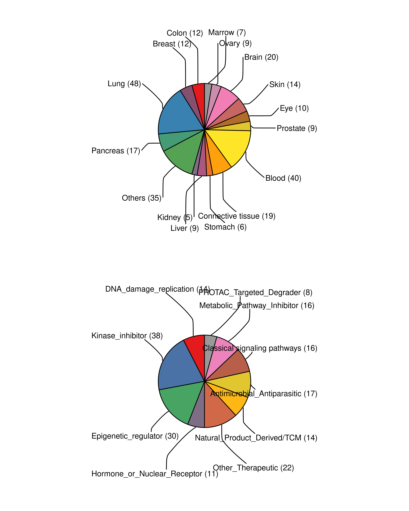
Furthermore, we evaluated the sample size distribution for both the drug-treated and control groups. Most groups have three or more samples. The result indicates a robust volume of samples in both conditions, ensuring adequate statistical power for subsequent differential expression and splicing analyses.
all_sample_meta <- readRDS("..//data/all_sample_meta.rds")
dt <- all_sample_meta %>%
select(unid, treat_sample, control_sample) %>%
rowwise() %>%
mutate(treat_sample_counts = length(strsplit(treat_sample,",")[[1]]),
control_sample_counts = length(strsplit(control_sample,",")[[1]])) %>%
ungroup()
treat_summ <- dt %>% group_by(treat_sample_counts) %>%
summarise(counts = n()) %>% ungroup() %>% mutate(log2sample = log2(counts)) %>%
mutate(treat_sample_counts = as.character(treat_sample_counts))
control_summ <- dt %>% group_by(control_sample_counts) %>%
summarise(counts = n()) %>% ungroup() %>% mutate(log2sample = log2(counts)) %>%
mutate(control_sample_counts = as.character(control_sample_counts))
p1 <- ggbarplot(treat_summ, x="treat_sample_counts",y="log2sample",
xlab = "Sample Counts of Treatment group",
ylab = "Log2(# Cell Line - Treatment)",fill = "#D9AE2C")+
geom_text(aes(label = counts), vjust = -0.5, size = 3)
p2 <- ggbarplot(control_summ, x="control_sample_counts",y="log2sample",
xlab = "Sample Counts of Control group",
ylab = "Log2(# Cell Line - Treatment)",fill = "#D88C27")+
geom_text(aes(label = counts), vjust = -0.5, size = 3)
p1/p2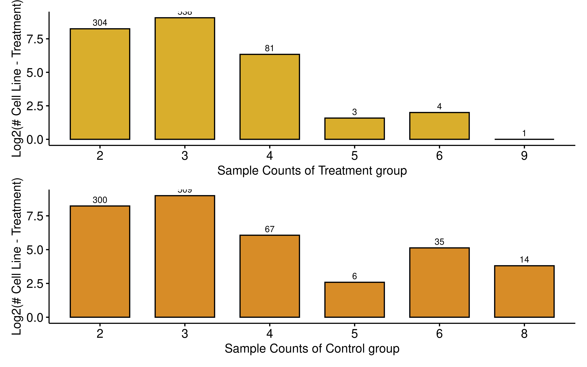
To provide a more granular view of the dataset composition, we also visualized the sample size distribution across the intersection of different drug classes and tissue types.
drug_info <- readxl::read_xlsx("..//data/drug_class.xlsx")
cell_line_meta <- readRDS("..//data/cell_line_meta.rds")
all_sample_meta <- readRDS("..//data/all_sample_meta.rds")
drug_meta <- readxl::read_xlsx("..//data/drug_meta.xlsx")
all_sample_meta <- left_join(all_sample_meta %>% select(-DrugType,-SMILE),
drug_meta %>% distinct(Drug,.keep_all = T)) %>%
left_join(., drug_info) %>%
left_join(., cell_line_meta %>% select(cell_line, Tissue_Source2))
#> Joining with `by = join_by(Drug)`
#> Joining with `by = join_by(DrugClass, DrugType)`
#> Joining with `by = join_by(cell_line, Tissue_Source2)`
all_sample_meta <- all_sample_meta %>%
rowwise() %>%
mutate(DrugClass = ifelse(grepl("\\+",Drug),"Combination Drugs",DrugClass)) %>%
ungroup()
dt <- all_sample_meta %>%
mutate(DrugClass = ifelse(is.na(DrugClass),"Other_Therapeutic",DrugClass)) %>%
group_by(DrugClass,Tissue_Source2) %>%
summarise(counts = n()) %>% ungroup()
#> `summarise()` has grouped output by 'DrugClass'. You can override using the
#> `.groups` argument.
ggplot(dt,aes(DrugClass, Tissue_Source2)) +
geom_point(
aes(fill = log2(counts+1), size = log2(counts+1)),
color = 'black',
shape = 21
) +
theme_minimal(
base_size = 16
) +
theme(axis.text.x = element_text(angle = 90, vjust = 0.5, hjust = 1))+
labs(
y = "Tissue",
fill = 'log2(#Cell Lines)'
) + guides(size = "none")+
scale_fill_gradient2(
low = '#FEE5C1',
high = '#B70503',
mid = '#FC8C59',
limits = c(1, 7),
midpoint = 4
) +
scale_size_area(
limits = c(1, 7),
max_size = 7
) +
coord_cartesian() +
theme(legend.position = 'top')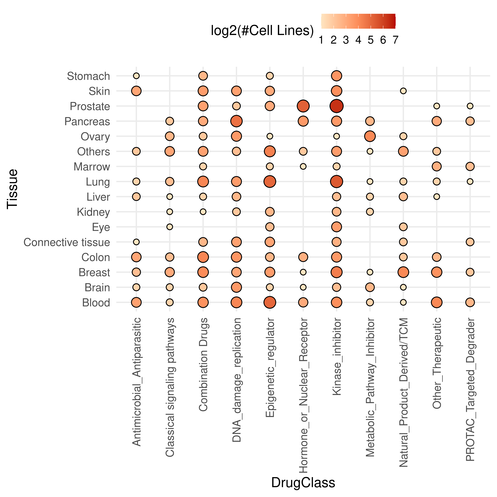
Drug-induced transcriptomic rewiring and identification of potential immunomodulatory agents
To characterize the global transcriptomic alterations triggered by
pharmacological interventions, we systematically analyzed the
differential gene expression (DEG) profiles between drug-treated and
untreated control cancer cell lines. To elucidate the functional
implications of these transcriptomic shifts, we performed Gene Set
Enrichment Analysis (GSEA) using 10,490 ontology gene sets from the
MSigDB database. The code for DEG and GSEA analysis can be found in
scripts/gene_exp_analysis.R. Following drug treatments,
cell lines exhibited widespread transcriptomic changes, as evidenced by
the substantial number of differentially expressed genes (DEGs) was
identified. (|log2FC| > 1 and adjusted P < 0.05) (median number of
DEGs is 794). The median number of significantly enriched pathways
(adjusted P< 0.1) is 923.
sample_meta <- readRDS("../data/all_sample_meta.rds")
diff_res <- vector("list",nrow(sample_meta))
for (i in seq_along(diff_res)){
tmp <- readRDS(paste0("../scripts/Shiny/data/",
sample_meta$unid[i],"_deseq.rds"))
diff_res[[i]] <- data.frame(ids = sample_meta$unid[i],
diff_counts = sum((tmp$padj < 0.05) & (abs(tmp$log2FoldChange) > 1), na.rm = T))
}
diff_res <- bind_rows(diff_res)
gghistogram(diff_res,x="diff_counts",add = "median", rug = TRUE,
xlab = "Number of DEGs",ylab = "Number of Treatments",fill = "#D9AE2C")+
annotate("text", x = median(diff_res$diff_counts)+400, y = 160,
label = paste0("Median: ",median(diff_res$diff_counts)),
size = 5, color = "red")
#> Warning: Using `bins = 30` by default. Pick better value with the argument
#> `bins`.
#> Warning: `geom_vline()`: Ignoring `mapping` because `xintercept` was provided.
#> Warning: `geom_vline()`: Ignoring `data` because `xintercept` was provided.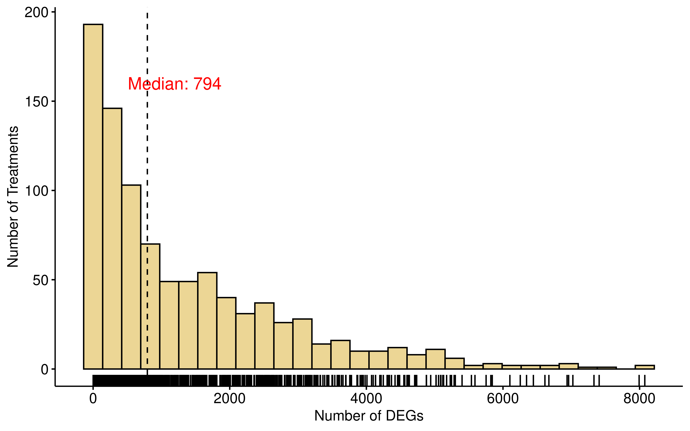
sample_meta <- readRDS("../data/all_sample_meta.rds")
diff_res <- vector("list",nrow(sample_meta))
for (i in seq_along(diff_res)){
tmp <- readRDS(paste0("~/GEO_data/SRA/gse_out/",sample_meta$unid[i],"/diff_gsea.rds"))
diff_res[[i]] <- data.frame(ids = sample_meta$unid[i],
diff_counts = sum((tmp$padj < 0.1), na.rm = T))
}
diff_res <- bind_rows(diff_res)
gghistogram(diff_res,x="diff_counts",add = "median", rug = TRUE,
xlab = "Number of Enriched Pathways",ylab = "Number of Treatments",
fill = "#D9AE2C")+
annotate("text", x = median(diff_res$diff_counts)+300, y = 80,
label = paste0("Median: ",median(diff_res$diff_counts)),
size = 5, color = "red")Given the ubiquity of these widespread transcriptomic changes, we next sought to evaluate the similarity of drug-induced transcriptomic responses across different treatment conditions. By calculating the Kendall correlation coefficient between the DESeq2 statistic vectors of any two drug-cell line treatments, we found that, overall, the transcriptomic response similarities were notably low across diverse drug-cell line pairs. This indicates that drug-induced transcriptional perturbations are highly context-dependent. When comparing cell lines from the same tissue origin versus those from different tissues, we observed that the drug-induced transcriptomic perturbation similarities were consistently higher within the same tissue type. This suggests that shared tissue-specific transcriptional programs impose a measurable constraint on the cellular response to pharmacological perturbations. Furthermore, the degree of response similarity was strongly influenced by the mechanism of action of the drug classes. For drug categories with diverse and dispersed targets, such as Natural_Product_Derived/TCM and Other_Therapeutic, the transcriptomic response similarities were particularly low.
###get deseq2 stat
sample_meta <- readRDS("../data/all_sample_meta.rds")
rank_res <- vector("list",nrow(sample_meta))
for (i in seq_along(rank_res)){
tmp <- readRDS(paste0("~/GEO_data/SRA/gse_out/",sample_meta$unid[i],"/deseq2_diff.rds"))
tmp <- tmp %>%
select(gene_id, stat)
colnames(tmp)[2] <- paste0("stat_",i)
rank_res[[i]] <- tmp
}
rank_res <- Reduce(inner_join,rank_res)
rownames(rank_res) <- rank_res$gene_id
rank_res$gene_id <- NULL
saveRDS(rank_res, "../data/deseq2_stat.rds")
##calculate sim
library(doParallel)
library(foreach)
cal_ken_par <- function(var_dt, ncores){
all_com <- combn(colnames(var_dt), 2, simplify = F)
all_com <- sapply(all_com, paste, collapse = "-")
my.cluster <- parallel::makeCluster(
ncores,
type = "PSOCK"
)
doParallel::registerDoParallel(cl = my.cluster)
res <- foreach(
i = all_com,
.export = c("var_dt"),
.packages = c("dplyr")
) %dopar% {
com_tmp <- strsplit(i,"-")[[1]]
cor_tmp <- kendallknight::kendall_cor(var_dt[[com_tmp[1]]],var_dt[[com_tmp[2]]])
return(data.frame(coms = i, cor = cor_tmp))
}
parallel::stopCluster(cl = my.cluster)
res <- bind_rows(res)
return(res)
}
cor_res <- cal_ken_par(rank_res,ncores = 60)
saveRDS(cor_res,"../data/deseq2_cor.rds")sample_meta <- readRDS("../data/all_sample_meta.rds")
cor_res <- readRDS("../data/deseq2_cor.rds")
drug_smiles_sim <- readRDS("../data/drug_smiles_sim.rds")
drug_id <- drug_smiles_sim %>% select(id1,Drug) %>% distinct_all()
mapping <- sample_meta %>%
select(Drug, DrugClass,Tissue_Source2) %>%
mutate(ids = paste0("stat_",1:nrow(sample_meta))) %>%
rename(Tissue = 3) %>%
left_join(.,drug_id %>% rename(drug_id = id1)) %>% select(-Drug)
#> Joining with `by = join_by(Drug)`
cor_res <- cor_res %>%
tidyr::separate_wider_delim(cols = coms, delim = "-", names = c("id1","id2"))
cor_res <- left_join(
cor_res, mapping %>%
rename(id1 = ids, Drug_class1 = DrugClass, Tissue1 = Tissue, Drug1 = drug_id)
) %>% left_join(., mapping %>%
rename(id2 = ids, Drug_class2 = DrugClass,
Tissue2 = Tissue, Drug2 = drug_id))
#> Joining with `by = join_by(id1)`
#> Joining with `by = join_by(id2)`
###NA 是未知药物类型
dt <- cor_res %>%
filter(!is.na(Drug_class1)) %>% filter(!is.na(Drug_class2)) %>%
mutate(is_same_drug = ifelse(Drug_class1 == Drug_class2,"Y","N")) %>%
mutate(is_same_tissue = ifelse(Tissue1 == Tissue2,"Y","N"))
###相同类型的药物在同一组织来源的细胞系和不同组织来源的细胞系之间的相似性
dt1 <- dt %>% filter(is_same_drug == "Y")
dt1 <- dt %>% filter(Drug1 != Drug2)
ggviolin(dt1, x="is_same_tissue",y="cor",facet.by = "Drug_class1",
add = "boxplot",color = "is_same_tissue",
palette = c("#80A9C9", "#89C7C1"),
add.params = list(outliers = FALSE),
xlab = "Same Type of Tissue",ylab = "Similarity",legend = "none")+
stat_compare_means(label = "p.format")+
theme(
strip.text = element_text(size = 6, face = "bold"),
strip.background = element_rect(fill = "lightblue")
)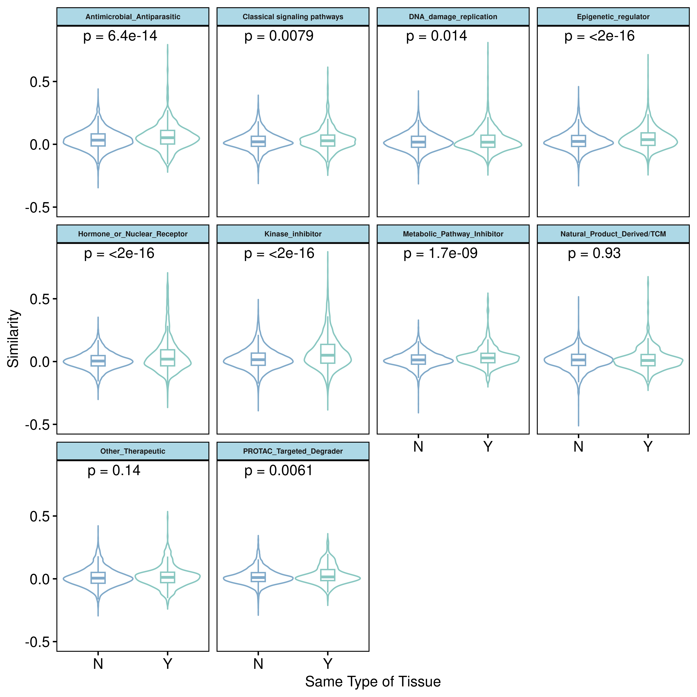
We also check the distribution of similarity score between drug treatments in the same type of tissue. We found that drug classes with highly specific and similar targets, such as Kinase_inhibitors, exhibited notably higher transcriptomic response similarities.
dt <- cor_res %>%
filter(Drug_class1 == Drug_class2)
dt1 <- dt %>% filter(Tissue1 == Tissue2) %>% filter(Drug1 != Drug2)
dt2 <- dt %>% filter(Tissue1 != Tissue2)
dt1_summ <- dt1 %>% group_by(Drug_class1) %>%
summarise(median_cor = median(cor)) %>% ungroup() %>%
arrange(median_cor)
dt1$Drug_class1 <- factor(dt1$Drug_class1, levels = dt1_summ$Drug_class1)
ggplot(dt1, aes(Drug_class1, cor, fill = Drug_class1)) +
geom_rain(alpha = .5, point.args = list(alpha = 0),
boxplot.args.pos = list(
width = 0.1, position = position_nudge(x = 0.13)),
violin.args.pos = list(
side = "r",
width = 0.7, position = position_nudge(x = 0.2))) +
theme_pubr() +
scale_fill_npg() +
guides(fill = 'none', color = 'none') +
coord_flip()+
labs(title = 'Drug Treated on Same Type of Tissue',
y = "Similarity",x="Drug Class")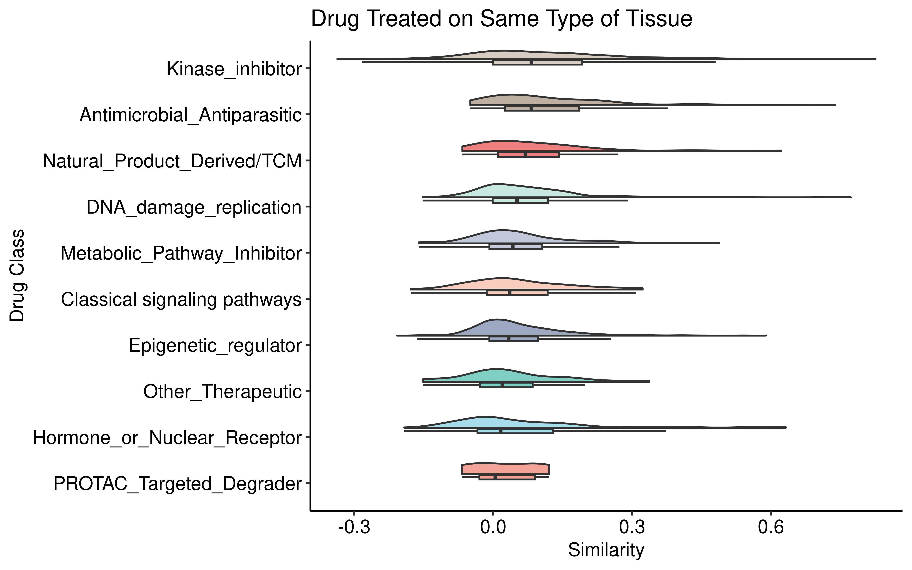
Similarly, samples treated with the same class of drug are enriched in groups with high transcriptional response similarity (Kendall correlation > 0.5).
dt <- cor_res %>% filter(Tissue1 == Tissue2)
dt <- dt %>%
filter(!is.na(Drug_class1)) %>% filter(!is.na(Drug_class2)) %>%
mutate(is_same_drug = ifelse(Drug_class1 == Drug_class2,"Same Drug Class",
"Not Same Drug Class")) %>%
mutate(cor_type = case_when(
cor >= 0.5 ~ "High \nTranscriptome Response Similarity",
cor < 0.5 ~ "Low \nTranscriptome Response Similarity"
))
###fisher检验
dt_summ <- dt %>%
group_by(cor_type,is_same_drug) %>% summarise(counts=n()) %>% ungroup()
#> `summarise()` has grouped output by 'cor_type'. You can override using the
#> `.groups` argument.
ggplot(data=dt_summ,aes(x=cor_type,y=counts,fill=is_same_drug))+
geom_bar(stat = "identity",position="fill")+
theme_pubr()+
labs(y="Percent of cases (%)",title = "Chi-squared test, P-value < 2.2e-16")+
scale_fill_manual(values=c("#3B4992FF","#EE0000FF"))+
theme(axis.title.x = element_blank())+
theme(legend.title = element_blank())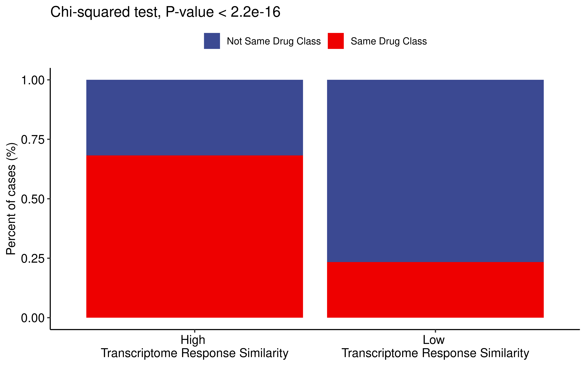
While the aforementioned drug classifications are predominantly based
on mechanisms of action or molecular targets, current phenotypic drug
discovery (Xing et al., 2026) increasingly relies on the inherent
structural characteristics of drug molecules themselves. Therefore, to
directly assess how the chemical properties of drugs relate to their
transcriptomic perturbations, we compared the molecular similarity of
drugs between the high and low transcriptomic response similarity
groups. We utilized two metrics: the classic Tanimoto similarity based
on SMILES representations, and the cosine similarity of molecular
embeddings derived from MoLFormer (Ross et al., 2022), a large-scale
chemical language model (code for get MolFormer embedding can be found
in scripts/MolFormer_embedding.ipynb).
library(rcdk)
library(fingerprint)
drug_meta <- readxl::read_xlsx("data/drug_meta.xlsx")
drug_meta <- drug_meta %>% filter(!is.na(SMILE)) %>% select(-DrugType) %>% distinct_all()
drug_meta <- drug_meta %>% mutate(id = paste0("Drug_",1:nrow(.)))
mols <- parse.smiles(drug_meta$SMILE)
names(mols) <- drug_meta$id
mols <- mols[lengths(mols) != 0]
mols_can <- lapply(mols, get.smiles, flavor = smiles.flavors("Canonical")) %>% unlist()
mols <- sapply(mols_can, parse.smiles)
names(mols) <- names(mols_can)
fp <- lapply(mols, get.fingerprint, type='standard')
fp.sim <- fingerprint::fp.sim.matrix(fp, method='tanimoto')
rownames(fp.sim) <- names(mols)
colnames(fp.sim) <- names(mols)
fp.sim <- as.data.frame(fp.sim)
fp.sim$id1 <- rownames(fp.sim)
fp.sim <- fp.sim %>% tidyr::pivot_longer(cols = 1:248, names_to = "id2", values_to = "sim")
fp.sim <- left_join(fp.sim, drug_meta %>% select(Drug, id) %>% rename(id1 = id))
saveRDS(fp.sim, "data/drug_smiles_sim.rds")
####molformer
dt <- mols_can %>% as.data.frame() %>% rename(smiles = 1)
dt$id <- rownames(dt)
write.csv(dt,"data/drug_smiles.csv",quote = F,row.names = F)
####see MolFormer_embedding.ipynb
molformer_sim <- read.csv("data/drug_molformer_sim.csv")
colnames(molformer_sim)[1] <- "id1"
molformer_sim <- molformer_sim %>%
tidyr::pivot_longer(cols = 2:249, names_to = "id2",values_to = "sim")
molformer_sim <- left_join(molformer_sim,
drug_meta %>% select(Drug, id) %>% rename(id1 = id))
saveRDS(molformer_sim, "data/drug_molformer_sim.rds")Both metrics consistently demonstrated that drug pairs within the high transcriptomic similarity group possessed significantly higher chemical structural similarity compared to those in the low-similarity group.
cor_res_smile <- left_join(cor_res,
drug_smiles_sim %>%
rename(Drug1 = id1, Drug2 = id2) %>%
select(Drug1, Drug2, sim))
#> Joining with `by = join_by(Drug1, Drug2)`
cor_res_smile <- cor_res_smile %>% filter(!is.na(sim))
drug_molformer_sim <- readRDS("../data/drug_molformer_sim.rds")
cor_res_molformer <- left_join(cor_res,
drug_molformer_sim %>%
rename(Drug1 = id1, Drug2 = id2) %>%
select(Drug1, Drug2, sim))
#> Joining with `by = join_by(Drug1, Drug2)`
cor_res_molformer <- cor_res_molformer %>% filter(!is.na(sim))
dt1 <- cor_res_smile %>%
filter(Tissue1 == Tissue2) %>%
mutate(cor_type = case_when(
cor >= 0.5 ~ "High",
cor < 0.5 ~ "Low"
))
p1 <- ggboxplot(dt1, x="cor_type",y="sim",
xlab = "Transcriptome Response Similarity",
ylab = "SMILEs Similarity (Tanimoto)",
fill = "cor_type",palette = c("#D9AE2C","#D88C27"))+
theme(legend.position = "none")+
stat_compare_means()
dt2 <- cor_res_molformer %>%
filter(Tissue1 == Tissue2) %>%
mutate(cor_type = case_when(
cor >= 0.5 ~ "High",
cor < 0.5 ~ "Low"
))
p2 <- ggboxplot(dt2, x="cor_type",y="sim",
xlab = "Transcriptome Response Similarity",
ylab = "SMILEs Embedding Similarity (MoLFormer)",
fill = "cor_type",palette = c("#D9AE2C","#D88C27"))+
theme(legend.position = "none")+
stat_compare_means()
p1+p2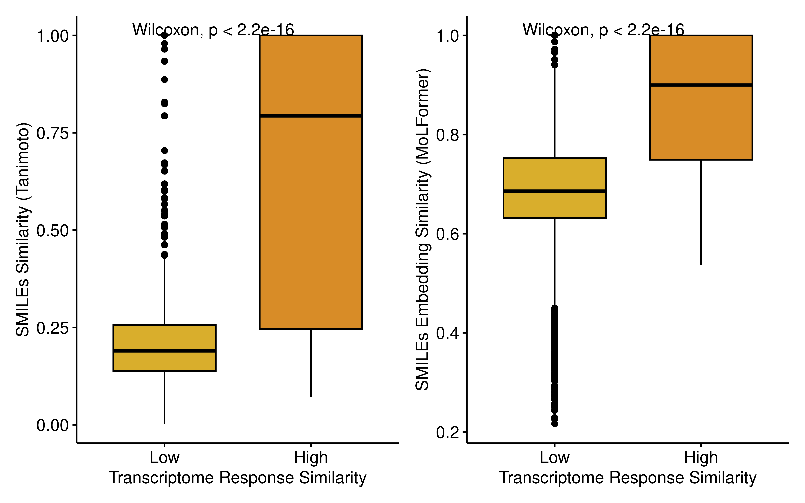
To quantitatively evaluate the predictive power of structural similarity for transcriptomic convergence, we constructed Receiver Operating Characteristic (ROC) curves using the two structural metrics as predictors. Both features demonstrated robust predictive capabilities, with the MoLFormer embedding similarity achieving a higher AUC (0.814) compared to the Tanimoto similarity (0.791). This finding indicates that structurally analogous compounds, especially those sharing deep chemical language representations, are more likely to induce convergent transcriptomic reprogramming.
dt1 <- dt1 %>% mutate(truth = factor(cor_type, levels = c("High","Low")))
dt2 <- dt2 %>% mutate(truth = factor(cor_type, levels = c("High","Low")))
p1 <- yardstick::roc_curve(dt1, truth, sim) %>%
ggplot(aes(x = 1 - specificity, y = sensitivity)) +
geom_path() +
geom_abline(lty = 3) +
coord_equal() +
theme_pubr()+
annotate("text", x = 0.25, y = 0.9,
label = paste0("AUROC: ",round(yardstick::roc_auc(dt1, truth, sim)$.estimate,3)),
size = 5, color = "red")
p2 <- yardstick::roc_curve(dt2, truth, sim) %>%
ggplot(aes(x = 1 - specificity, y = sensitivity)) +
geom_path() +
geom_abline(lty = 3) +
coord_equal() +
theme_pubr()+
annotate("text", x = 0.25, y = 0.9,
label = paste0("AUROC: ",round(yardstick::roc_auc(dt2, truth, sim)$.estimate,3)),
size = 5, color = "red")
p1 + p2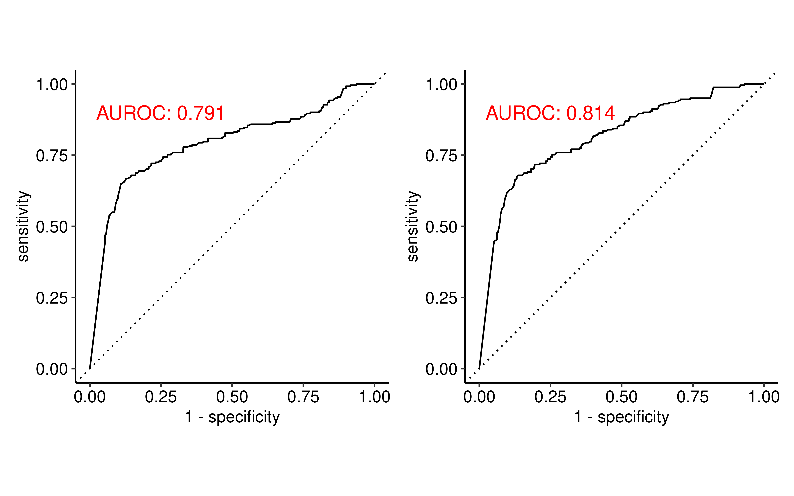
To demonstrate the utility of our database, we sought to identify drugs capable of transforming the tumor immune microenvironment (TME) into a “hot” state, which is generally associated with enhanced anti-tumor immunity and improved responsiveness to immunotherapy. We established a screening strategy based on three gene signatures reflecting distinct immune-modulatory features: antigen processing and presentation machinery from msigdb database, a CRISPR screen-derived gene set of cancer-intrinsic evasion of T cell killing (Lawson et al., 2020) , and genes up-regulated in immune-resistant cancer cell line (Lin et al., 2007). We hypothesized that an ideal immunostimulatory drug would positively enrich the first two gene sets while negatively enriching the immune evasion upregulated gene set. Applying GSEA analysis on our DRIVE data, we evaluated the drug-induced enrichment profiles across various treated cell lines. As a result, we identified multiple drugs that met these criteria.
rm(list = ls())
immune_res <- readRDS("../data/immune_path_gsea.rds")
sample_meta <- readRDS("../data/all_sample_meta.rds")
plot_nes <- function(pathway_gsea, sample_meta_dt, pathway_name, need_drugs){
pathway_gsea <- left_join(sample_meta_dt, pathway_gsea %>% rename(unid = id))
dt_sig <- pathway_gsea %>%
group_by(Drug) %>% mutate(treat_counts = length(unique(cell_line))) %>%
ungroup() %>% filter(treat_counts > 3) %>%
filter(Drug %in% need_drugs)
#####
all_drugs <- unique(dt_sig$Drug)
drug_nes <- sapply(all_drugs,
function(x){
tmp <- dt_sig %>% filter(Drug == x)
tmp_dt <- data.frame(Drug = x, NES = tmp$NES) %>% arrange(desc(NES))
pc <- sum(tmp_dt$NES > 0)
nc <- sum(tmp_dt$NES < 0)
tmp_dt$y <- c(seq(from=0.5,by=1,length.out=pc),
seq(from=-0.5,by=-1,length.out=nc))
return(tmp_dt)
},simplify = F)
drug_nes <- bind_rows(drug_nes)
ggplot(drug_nes, aes(x = Drug, y = y, fill = NES)) +
geom_tile(width = 0.5, height = 1, color = "black", size = 0.5)+
scale_fill_gradient(low = "blue", high = "red") +
labs(x = "Drug",
y = "Cells",
fill = "NES",
title = pathway_name)+
theme(
axis.text.y = element_blank(),
axis.ticks.y = element_blank(),
axis.line.y = element_blank()
)+
geom_hline(yintercept = 0,
color = "black",
linewidth = 1,
linetype = "solid")+
theme(
panel.background = element_blank(),
plot.background = element_blank(),
panel.grid = element_blank()
)+
theme(
axis.text.x = element_text(
size = 14,
angle = 90,
hjust = 1,
#vjust = 1
)
)
}
dt <- left_join(sample_meta, immune_res %>% rename(unid = id))
#> Joining with `by = join_by(unid)`
dt_summ <- dt %>%
group_by(Drug,pathway) %>%
summarise(pc = sum(NES > 0), nc = sum(NES < 0)) %>% ungroup() %>%
rowwise() %>%
mutate(tc = pc+nc) %>% ungroup() %>% filter(tc > 3) %>%
rowwise() %>%
mutate(is_need = case_when(
(pathway == "DOWN_Immune_Escape") & (pc > nc) ~ "yes",
(pathway == "UP_Immune_Escape") & (pc < nc) ~ "yes",
(pathway == "KEGG_ANTIGEN_PROCESSING_AND_PRESENTATION") & (pc > nc) ~ "yes",
TRUE ~ "no"
)) %>% ungroup() %>%
group_by(Drug) %>% summarise(yes_c = sum(is_need == "yes")) %>% ungroup() %>%
filter(yes_c == 3) %>%
filter(!(Drug %in% c("A","T")))
#> `summarise()` has grouped output by 'Drug'. You can override using the
#> `.groups` argument.
dt <- immune_res %>%
filter(pathway == "KEGG_ANTIGEN_PROCESSING_AND_PRESENTATION")
p1 <- plot_nes(dt, sample_meta, "APM", dt_summ$Drug)
#> Joining with `by = join_by(unid)`
#> Warning: Using `size` aesthetic for lines was deprecated in ggplot2 3.4.0.
#> ℹ Please use `linewidth` instead.
#> This warning is displayed once every 8 hours.
#> Call `lifecycle::last_lifecycle_warnings()` to see where this warning was
#> generated.
dt <- immune_res %>%
filter(pathway == "DOWN_Immune_Escape")
p2 <- plot_nes(dt, sample_meta, "DOWN_Immune_Escape", dt_summ$Drug)
#> Joining with `by = join_by(unid)`
dt <- immune_res %>%
filter(pathway == "UP_Immune_Escape")
p3 <- plot_nes(dt, sample_meta, "UP_Immune_Escape", dt_summ$Drug)
#> Joining with `by = join_by(unid)`
p1 / p2 / p3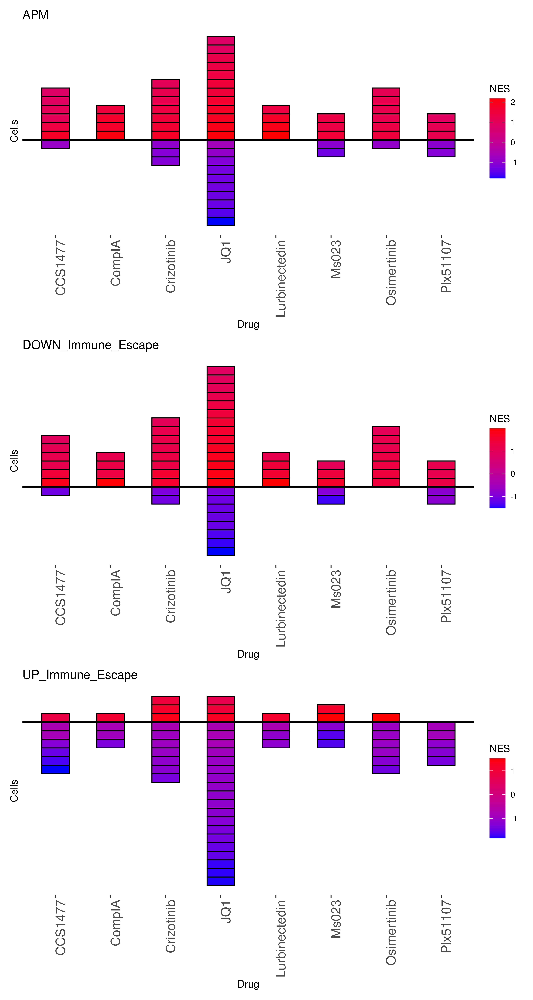
Among the identified candidates, We selected Osimertinib for further validation, due to the scarcity of matched pre- and post-treatment data for the other drugs in public repositories. To validate its potential to activate the TME, we leveraged publicly available single-cell RNA sequencing (scRNA-seq) data from (Maynard et al., 2020), which included samples before drug treatment (n=15) and after Osimertinib treatment (n=10). Specifically, the proportion of T cells significantly increased in the post-treatment samples compared to the naive baseline, suggesting an enhanced immune infiltration.
library(Seurat)
#> Loading required package: SeuratObject
#> Loading required package: sp
#> 'SeuratObject' was built with package 'Matrix' 1.7.1 but the current
#> version is 1.7.4; it is recomended that you reinstall 'SeuratObject' as
#> the ABI for 'Matrix' may have changed
#>
#> Attaching package: 'SeuratObject'
#> The following objects are masked from 'package:base':
#>
#> intersect, t
#> Registered S3 method overwritten by 'spatstat.geom':
#> method from
#> print.metric yardstick
rm(list = ls())
sample_meta <- readxl::read_xlsx("../data/CELL_metadata.xlsx",sheet = 2)
tn <- sample_meta %>% filter(`Treatement Timepoint` == "TN")
osi <- sample_meta %>% filter(Treatment == "osimertinib") %>%
filter(`Treatement Timepoint` != "TN")
load("../data/IM01_Immune_Seurat_object_nodups-006.RData")
new_obj <- UpdateSeuratObject(tiss_immune)
#> Validating object structure
#> Updating object slots
#> Ensuring keys are in the proper structure
#> Updating matrix keys for DimReduc 'pca'
#> Updating matrix keys for DimReduc 'tsne'
#> Warning: Assay RNA changing from Assay to Assay
#> Warning: Graph RNA_nn changing from Graph to Graph
#> Warning: Graph RNA_snn changing from Graph to Graph
#> Warning: DimReduc pca changing from DimReduc to DimReduc
#> Warning: DimReduc tsne changing from DimReduc to DimReduc
#> Ensuring keys are in the proper structure
#> Ensuring feature names don't have underscores or pipes
#> Updating slots in RNA
#> Updating slots in RNA_nn
#> Setting default assay of RNA_nn to RNA
#> Updating slots in RNA_snn
#> Setting default assay of RNA_snn to RNA
#> Updating slots in pca
#> Updating slots in tsne
#> Setting tsne DimReduc to global
#> Setting assay used for NormalizeData.RNA to RNA
#> Setting assay used for FindVariableFeatures.RNA to RNA
#> Setting assay used for ScaleData.RNA to RNA
#> Setting assay used for RunPCA.RNA to RNA
#> Setting assay used for FindNeighbors.RNA.pca to RNA
#> No assay information could be found for RunTSNE
#> Warning: Adding a command log without an assay associated with it
#> No assay information could be found for FindClusters
#> Warning: Adding a command log without an assay associated with it
#> Validating object structure for Assay 'RNA'
#> Validating object structure for Graph 'RNA_nn'
#> Validating object structure for Graph 'RNA_snn'
#> Validating object structure for DimReduc 'pca'
#> Validating object structure for DimReduc 'tsne'
#> Object representation is consistent with the most current Seurat version
sub_obj <- subset(new_obj,subset = sample_name %in% c(tn$`Sample Name`,osi$`Sample Name`))
sub_obj$sample_type <- case_when(
sub_obj$sample_name %in% tn$`Sample Name` ~ "Naive",
sub_obj$sample_name %in% osi$`Sample Name` ~ "Osimertinib Treatment"
)
sub_obj <- RunUMAP(sub_obj, dims = 1:50, reduction = "pca", reduction.name = "umap")
#> Warning: The default method for RunUMAP has changed from calling Python UMAP via reticulate to the R-native UWOT using the cosine metric
#> To use Python UMAP via reticulate, set umap.method to 'umap-learn' and metric to 'correlation'
#> This message will be shown once per session
#> 09:25:08 UMAP embedding parameters a = 0.9922 b = 1.112
#> 09:25:08 Read 7169 rows and found 50 numeric columns
#> 09:25:08 Using Annoy for neighbor search, n_neighbors = 30
#> 09:25:08 Building Annoy index with metric = cosine, n_trees = 50
#> 0% 10 20 30 40 50 60 70 80 90 100%
#> [----|----|----|----|----|----|----|----|----|----|
#> **************************************************|
#> 09:25:09 Writing NN index file to temp file /tmp/RtmpzDb3He/file3898e11b1bacde
#> 09:25:09 Searching Annoy index using 1 thread, search_k = 3000
#> 09:25:11 Annoy recall = 100%
#> 09:25:11 Commencing smooth kNN distance calibration using 1 thread with target n_neighbors = 30
#> 09:25:12 Initializing from normalized Laplacian + noise (using RSpectra)
#> 09:25:12 Commencing optimization for 500 epochs, with 312894 positive edges
#> 09:25:19 Optimization finished
DimPlot(sub_obj, reduction = "umap",
group.by = c("sample_type","immune_subtype_annotation"),ncol=1)
#> Warning: `aes_string()` was deprecated in ggplot2 3.0.0.
#> ℹ Please use tidy evaluation idioms with `aes()`.
#> ℹ See also `vignette("ggplot2-in-packages")` for more information.
#> ℹ The deprecated feature was likely used in the Seurat package.
#> Please report the issue at <https://github.com/satijalab/seurat/issues>.
#> This warning is displayed once every 8 hours.
#> Call `lifecycle::last_lifecycle_warnings()` to see where this warning was
#> generated.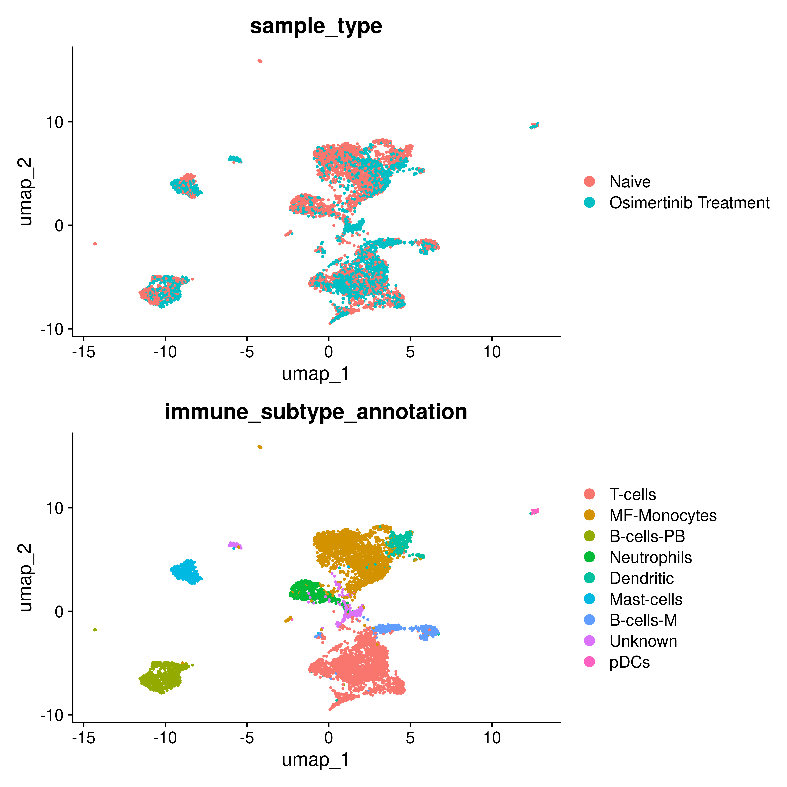
obj_meta <- sub_obj@meta.data
obj_meta <- obj_meta %>%
select(sample_name, cell_id, immune_subtype_annotation, sample_type)
obj_summ <- obj_meta %>%
group_by(sample_type,sample_name) %>%
summarise(t_p = mean(immune_subtype_annotation == "T-cells")) %>% ungroup()
#> `summarise()` has grouped output by 'sample_type'. You can override using the
#> `.groups` argument.
ggboxplot(obj_summ,x="sample_type",y="t_p",ylab = "Percentage of T cells",
add = "jitter", fill = "sample_type",palette = c("#707DA6","#CCAD9D"),
xlab = F) +
stat_compare_means()+theme(legend.position = "none")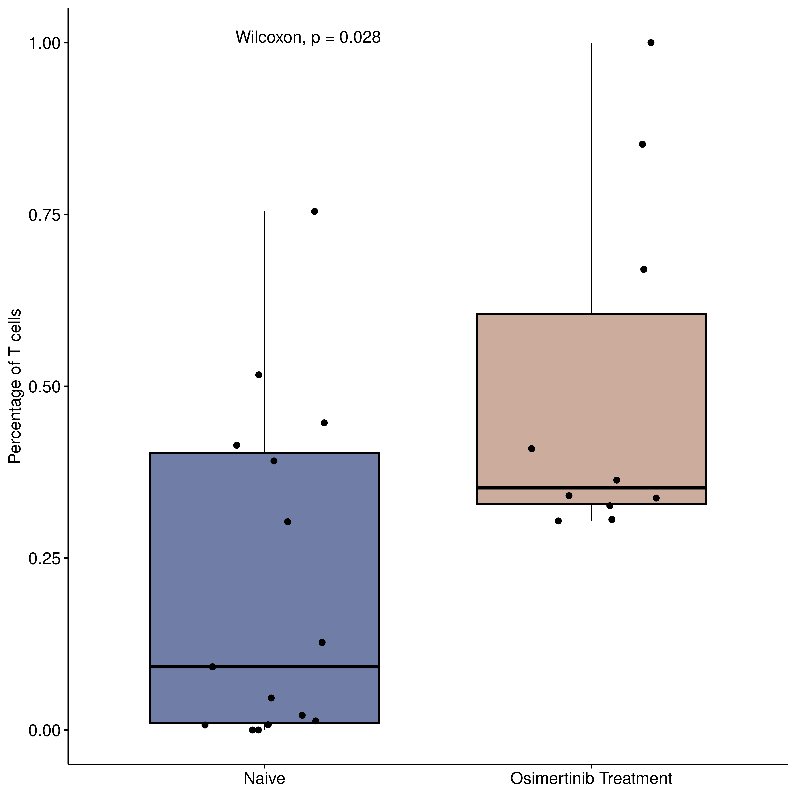
Furthermore, using bulk RNA-seq data of paired patient samples from (Roper et al., 2020), we assessed the functional state of the immune microenvironment. Although the limited sample size restricted statistical power, the GSVA score for the “T CELL MEDIATED CYTOTOXICITY” gene set exhibited a clear increasing trend following Osimertinib treatment.
rm(list = ls())
exp <- readxl::read_xlsx("../data/cell_reports_med_exp.xlsx") %>%
as.data.frame()
#> New names:
#> • `NCI0402_T4R` -> `NCI0402_T4R...22`
#> • `NCI0402_T4R` -> `NCI0402_T4R...23`
meta <- readRDS("../data/cell_rep_med_meta.rds")
meta <- meta %>%
tidyr::pivot_longer(cols = c(pre,post), names_to = "type", values_to = "sample") %>%
mutate(sample_id = paste0(sample,"R"))
meta <- meta %>% distinct_all()
rownames(exp) <- exp$Gene
exp$Gene <- NULL
exp_TPM <- exp %>% mutate(across(everything(), ~(./sum(.,na.rm = T))*10**6))
exp_TPM <- log2(as.matrix(exp_TPM) + 1) %>% as.data.frame()
cyt <- fgsea::gmtPathways("../data/GOBP_T_CELL_MEDIATED_CYTOTOXICITY.v2026.1.Hs.gmt")
#> Warning in readLines(gmt.file): incomplete final line found on
#> '../data/GOBP_T_CELL_MEDIATED_CYTOTOXICITY.v2026.1.Hs.gmt'
para <- GSVA::gsvaParam(exp_TPM %>% as.matrix(), cyt,
minSize=5, maxSize=500, kcdf="Gaussian")
res <- GSVA::gsva(para)
#> ℹ GSVA version 2.0.7
#> ℹ Calculating GSVA ranks
#> ℹ GSVA dense (classical) algorithm
#> ℹ Row-wise ECDF estimation with Gaussian kernels
#> ℹ Calculating GSVA column ranks
#> ℹ Calculating GSVA scores
#> ✔ Calculations finished
res <- t(res) %>% as.data.frame()
res$sample <- rownames(res)
colnames(res)[1] <- "score"
res <- left_join(res %>% rename(sample_id = sample), meta)
#> Joining with `by = join_by(sample_id)`
dt <- res %>% dplyr::filter(!is.na(sample))
dt_summ <- dt %>% group_by(patient) %>% summarise(counts = length(unique(type))) %>%
ungroup() %>% filter(counts == 2)
dt <- dt %>% filter(patient %in% dt_summ$patient)
dt <- dt %>%
select(patient, type, score) %>%
tidyr::pivot_wider(names_from = type, values_from = score)
ggpaired(dt, cond1 = "pre", cond2 = "post",
fill = "condition", palette = "jco",
ylab = "GSVA score of T_CELL_MEDIATED_CYTOTOXICITY")+
stat_compare_means(paired = T)+
scale_fill_npg()+
guides(fill = 'none', color = 'none')
#> Scale for fill is already present.
#> Adding another scale for fill, which will replace the existing scale.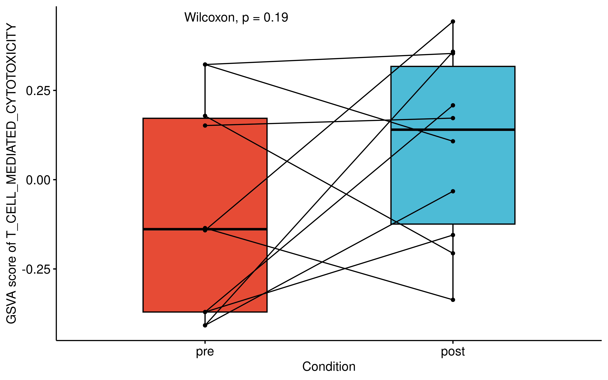
Consistent with this, the TIDE score (Jiang et al., 2018), a metric indicative of immune evasion, showed a noticeable decreasing trend in post-treatment. Despite the lack of formal statistical significance, these consistent directional shifts across independent metrics further support the notion that Osimertinib could potentially promote a hotter TME, underscoring the reliability of our database for drug repurposing and immunological research.
###TIDE res
tide <- data.table::fread("../data/cell_rep_med_res.txt",data.table = F)
res <- left_join(tide %>% rename(sample_id = V1), meta)
#> Joining with `by = join_by(sample_id)`
res <- res %>% dplyr::filter(!is.na(sample))
res_summ <- res %>% group_by(patient) %>% summarise(counts = length(unique(type))) %>%
ungroup() %>% filter(counts == 2)
res <- res %>% filter(patient %in% res_summ$patient)
dt <- res %>%
select(patient, type, TIDE) %>%
rename(score = 3) %>%
tidyr::pivot_wider(names_from = type, values_from = score)
ggpaired(dt, cond1 = "pre", cond2 = "post",
fill = "condition", ylab = "TIDE score")+
stat_compare_means(paired = T)+
scale_fill_npg()+
guides(fill = 'none', color = 'none')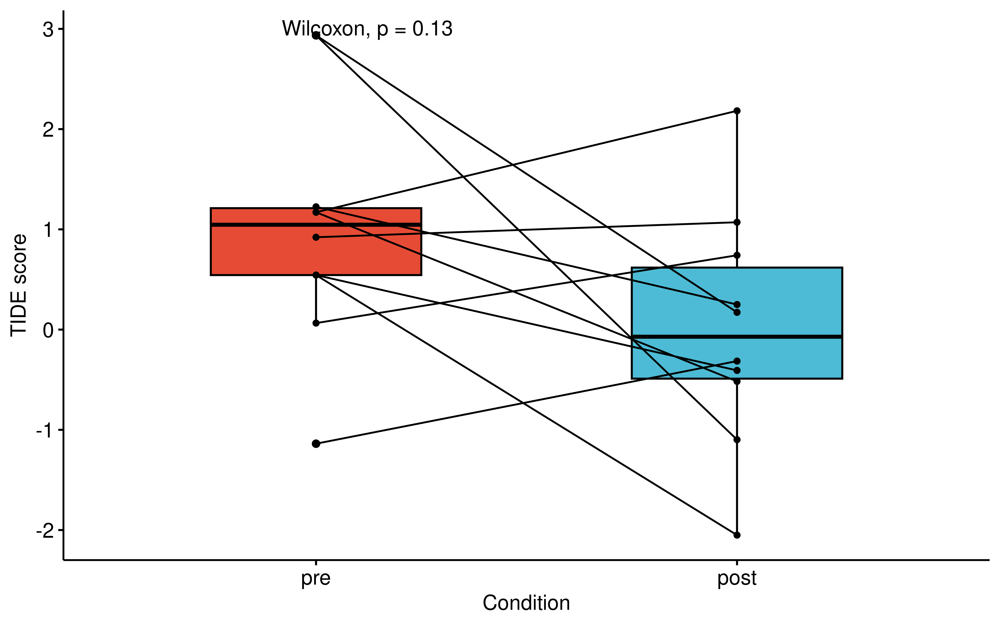
Drug-induced shift of alternative splicing
To characterize the global impact of drug treatment on alternative splicing (AS) in cancer cells, we systematically identified differential AS events between drug-treated and untreated control groups. Using stringent criteria (absolute delta percent spliced in or PSI > 0.1 and BH-adjusted P < 0.05), we quantified the number of significant differential AS events across cell lines. We observed widespread drug-induced AS alterations, with the distribution varying across cell lines of different tissue origins and drug categories.
##all_res
all_dir <- list.files("~/GEO_data/SRA/gse_out/",recursive = T,pattern = "A3SS.MATS.JCEC.txt",
full.names = T)
all_dir <- gsub("/rmats_out/.+","",all_dir)
as_type <- c("A3SS","A5SS","MXE","RI","SE")
library(doParallel)
library(foreach)
#create the cluster
my.cluster <- parallel::makeCluster(
40,
type = "PSOCK"
)
#register it to be used by %dopar%
doParallel::registerDoParallel(cl = my.cluster)
res <- foreach(
i = 1:length(all_dir),
.export = c("all_dir","as_type"),
.packages = c("dplyr")
) %dopar% {
res_tmp <- vector("list")
for (j in 1:length(as_type)){
file_name <- paste0(all_dir[i],"/rmats_out/",as_type[j],".MATS.JC.txt")
dt <- data.table::fread(file_name,data.table = F,check.names = T)
if (is.character(dt$FDR)){
dt <- data.table::fread(file_name,data.table = F,check.names = T,
colClasses=list(character=c("IJC_SAMPLE_1","IJC_SAMPLE_2",
"SJC_SAMPLE_1","SJC_SAMPLE_2",
"IncLevel1","IncLevel2"),
numeric=c("PValue","FDR","IncLevelDifference")))
dt$PValue <- as.numeric(dt$PValue)
dt$FDR <- as.numeric(dt$FDR)
dt$IncLevelDifference <- as.numeric(dt$IncLevelDifference)
}
dt$sample_id <- gsub(".+//","",all_dir[i])
dt$as_type <- as_type[j]
dt <- dt %>%
select(sample_id, as_type, ID, GeneID, geneSymbol, IJC_SAMPLE_1, IJC_SAMPLE_2,
SJC_SAMPLE_1, SJC_SAMPLE_2, PValue, FDR, IncLevel1, IncLevel2, IncLevelDifference)
dt <- dt %>%
rowwise() %>%
mutate(reads_the = any((paste(IJC_SAMPLE_1,IJC_SAMPLE_2,
SJC_SAMPLE_1,SJC_SAMPLE_2,sep = ",") %>%
strsplit(.,",") %>% `[[`(1) %>% as.numeric()) > 10)) %>%
ungroup() %>% filter(reads_the) %>% filter(FDR < 0.05)
dt <- dt %>% select(-reads_the)
res_tmp <- c(res_tmp,list(dt))
}
res_tmp <- bind_rows(res_tmp[which(lengths(res_tmp) > 0)])
return(res_tmp)
}
parallel::stopCluster(cl = my.cluster)
res <- bind_rows(res)
saveRDS(res,"../data/rmats_res_fdr005.rds")rm(list = ls())
res <- readRDS("../data/rmats_res_fdr005.rds")
res <- res %>% filter(abs(IncLevelDifference) > 0.1)
sample_meta <- readRDS("../data/all_sample_meta.rds")
res <- left_join(res, sample_meta %>% rename(sample_id = unid))
#> Joining with `by = join_by(sample_id)`
res_summ <- res %>% group_by(Tissue_Source2,cell_line,Drug) %>%
summarise(counts = n()) %>% ungroup() %>%
mutate(log2counts = log2(counts))
#> `summarise()` has grouped output by 'Tissue_Source2', 'cell_line'. You can
#> override using the `.groups` argument.
ord <- res_summ %>% group_by(Tissue_Source2) %>% summarise(med = median(log2counts)) %>%
ungroup() %>% arrange(desc(med))
p1 <- ggboxplot(res_summ,x="Tissue_Source2",y="log2counts",add = "jitter",
color = "Tissue_Source2",order = ord$Tissue_Source2,xlab = F)+
theme(legend.position = "none")+
rotate_x_text(45)
res_summ <- res %>% group_by(DrugClass,cell_line,Drug) %>%
summarise(counts = n()) %>% ungroup() %>%
mutate(log2counts = log2(counts)) %>%
filter(!is.na(DrugClass))
#> `summarise()` has grouped output by 'DrugClass', 'cell_line'. You can override
#> using the `.groups` argument.
ord <- res_summ %>% group_by(DrugClass) %>% summarise(med = median(log2counts)) %>%
ungroup() %>% arrange(desc(med))
p2 <- ggboxplot(res_summ,x="DrugClass",y="log2counts",add = "jitter",
color = "DrugClass",order = ord$DrugClass,xlab = F)+
theme(legend.position = "none")+
rotate_x_text(90)
p1 / p2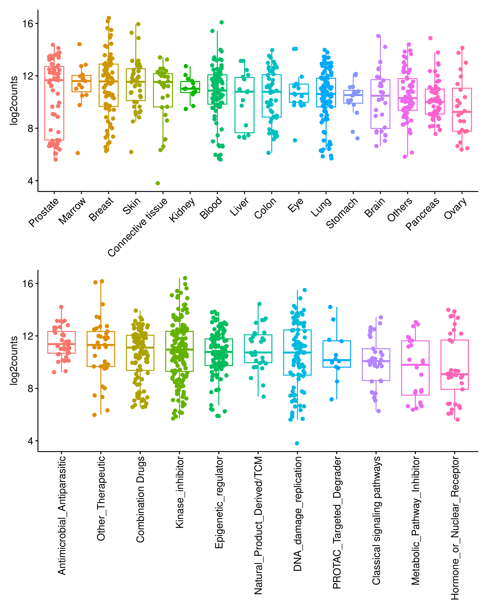
Skipped exon (SE) is the most prevalent differential AS type.
res_summ <- res %>% group_by(Tissue_Source2,as_type) %>%
summarise(counts = n()) %>% ungroup()
#> `summarise()` has grouped output by 'Tissue_Source2'. You can override using
#> the `.groups` argument.
p1 <- ggplot(res_summ, aes(fill=as_type, y=counts, x=Tissue_Source2)) +
geom_bar(position="fill", stat="identity")+
scale_fill_npg()+
theme_pubr()+
labs(y="Proportion of splicing events",x=NULL)+
guides(fill=guide_legend(title="Alternative splicing patterns"))+
rotate_x_text(45)
res_summ <- res %>% group_by(DrugClass,as_type) %>%
summarise(counts = n()) %>% ungroup() %>% filter(!is.na(DrugClass))
#> `summarise()` has grouped output by 'DrugClass'. You can override using the
#> `.groups` argument.
p2 <- ggplot(res_summ, aes(fill=as_type, y=counts, x=DrugClass)) +
geom_bar(position="fill", stat="identity")+
scale_fill_npg()+
theme_pubr()+
labs(y="Proportion of splicing events",x=NULL)+
guides(fill=guide_legend(title="Alternative splicing patterns"))+
rotate_x_text(45)
p1 + p2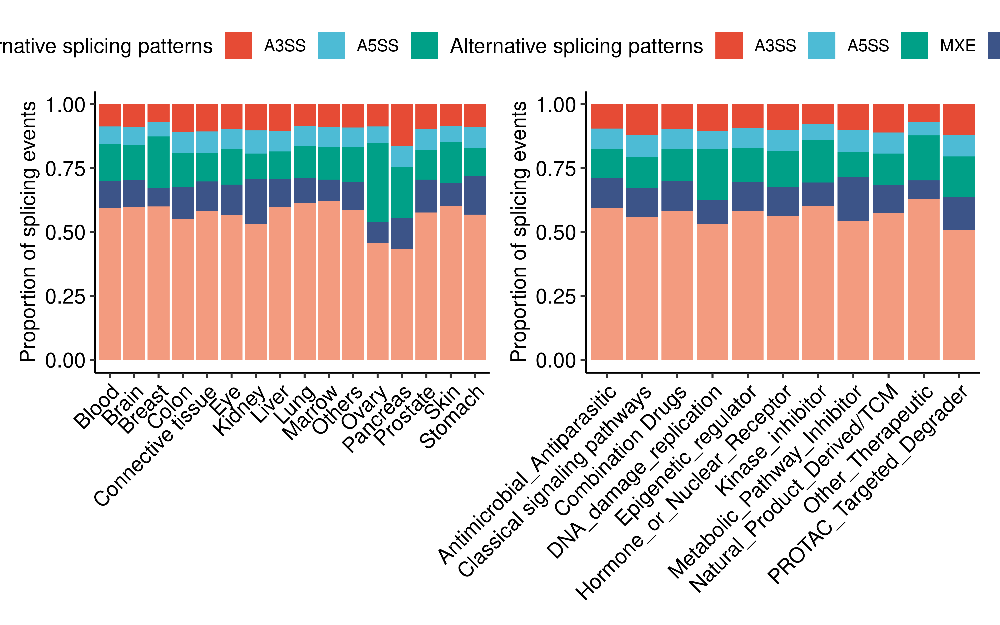
To evaluate the global directional shift of AS induced by specific drugs, we compared the proportional differences between positive and negative delta PSI for each drug-induced differential AS type across samples. To ensure statistical robustness, we focused on drugs tested in at least three cell lines.
rm(list = ls())
res <- readRDS("../data/rmats_res_fdr005.rds")
sample_meta <- readRDS("../data/all_sample_meta.rds")
res <- left_join(res, sample_meta %>% rename(sample_id = unid))
#> Joining with `by = join_by(sample_id)`
res <- res %>% filter(abs(IncLevelDifference) > 0.1)
###大于3个细胞系的drug
drugs <- res %>% group_by(Drug) %>% summarise(cell_counts = length(unique(cell_line))) %>%
ungroup()
drugs <- drugs %>% filter(cell_counts >= 3)
dt <- res %>%
filter(Drug %in% drugs$Drug)
dt_summ <- dt %>% group_by(sample_id, as_type) %>%
summarise(pos_c = mean(IncLevelDifference > 0),
neg_c = mean(IncLevelDifference < 0)) %>%
ungroup() %>% left_join(., sample_meta %>% rename(sample_id = unid))
#> `summarise()` has grouped output by 'sample_id'. You can override using the
#> `.groups` argument.
#> Joining with `by = join_by(sample_id)`
dt_stat <- dt_summ %>%
group_by(Drug, as_type) %>%
summarise(pvalue = wilcox.test(pos_c,neg_c)$p.value,
diff = median(pos_c) - median(neg_c)) %>% ungroup()
#> Warning: There were 64 warnings in `summarise()`.
#> The first warning was:
#> ℹ In argument: `pvalue = wilcox.test(pos_c, neg_c)$p.value`.
#> ℹ In group 1: `Drug = "5FU"` `as_type = "A3SS"`.
#> Caused by warning in `wilcox.test.default()`:
#> ! cannot compute exact p-value with ties
#> ℹ Run `dplyr::last_dplyr_warnings()` to see the 63 remaining warnings.
#> `summarise()` has grouped output by 'Drug'. You can override using the
#> `.groups` argument.
dt_stat$padj <- p.adjust(dt_stat$pvalue,"fdr")
dt_stat_summ <- dt_stat %>% group_by(Drug) %>%
summarise(sig_c = sum(pvalue < 0.05),
max_diff = max(abs(diff))) %>% ungroup() %>%
arrange(desc(sig_c),desc(max_diff))
###
library(ggtext)
top5_drugs <- dt_stat_summ$Drug[1:5]
col_dt <- data.frame(
as_type = unique(dt_stat$as_type),
colors = c("#E64B35FF","#4DBBD5FF","#00A087FF","#3C5488FF","#F39B7FFF")
)
dt_sub <- dt_stat %>%
filter(Drug %in% top5_drugs) %>%
left_join(., col_dt) %>%
mutate(Drug = factor(Drug, levels = top5_drugs)) %>%
mutate(
Y_label = sprintf("%s <span style='color:%s;'>%s</span>", Drug, colors, as_type),
Neglog10_pval = -log10(pvalue)
) %>% arrange(Drug) %>%
mutate(Y_label = factor(Y_label, levels = rev(unique(Y_label))))
#> Joining with `by = join_by(as_type)`
p_left <- ggplot(dt_sub, aes(x = diff, y = Y_label, fill = diff > 0)) +
geom_col(width = 0.7) +
geom_vline(xintercept = 0, linetype = "dashed", color = "grey50", linewidth = 0.5) +
scale_fill_manual(values = c("FALSE" = "#E41A1C", "TRUE" = "#377EB8"), guide = "none") +
scale_x_continuous(breaks = seq(-0.4, 0.4, 0.2)) +
labs(x = "Median (Percentage of ΔPSI > 0)-Median (Percentage of ΔPSI < 0)", y = NULL) +
theme_classic() +
theme(
axis.text.y = element_markdown(size = 10),
plot.margin = margin(5, 0, 5, 5)
)
p_right <- ggplot(dt_sub, aes(x = Neglog10_pval, y = Y_label, fill = Neglog10_pval)) +
geom_col(width = 0.7) +
scale_fill_gradient(low = "#FEE08B", high = "#D73027", guide = "none") +
labs(x = expression(-log[10](P~value)), y = NULL) +
theme_classic() +
theme(
axis.text.y = element_blank(),
axis.ticks.y = element_blank(),
plot.margin = margin(5, 5, 5, 0)
)
p <- p_left + p_right + plot_layout(widths = c(2, 1))
p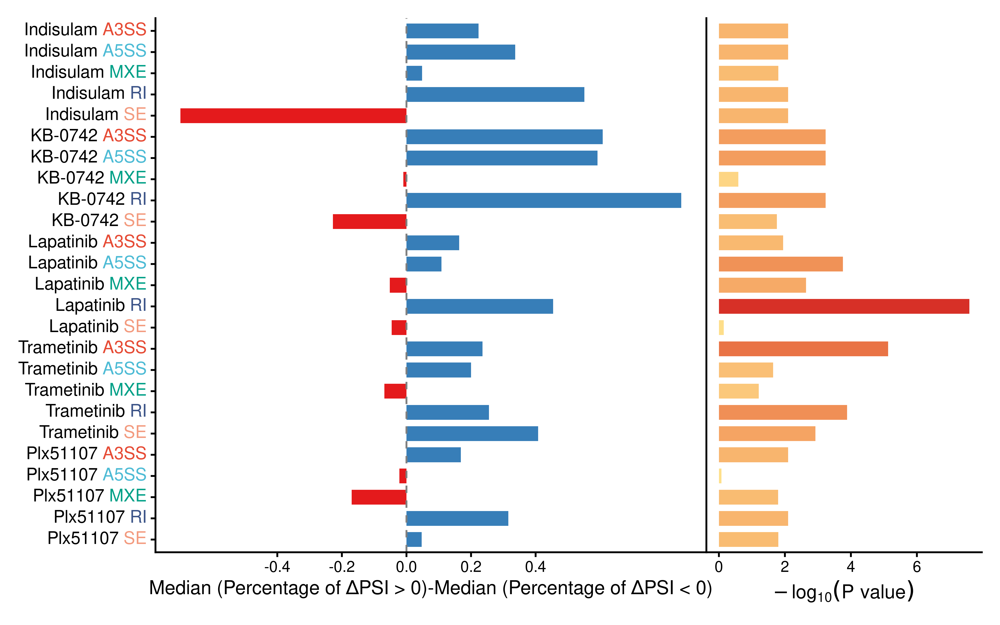
Among the top 5 drugs showing the most significant imbalances between percentages of AS events with positive and negative delta PSI, Indisulam ranked first. This is consistent with its well-established role as a splicing modulator (Singh et al., 2021), thereby could serve as a positive control for our analytical pipeline. As expected, Indisulam treatment induced a pronounced imbalance between positive and negative delta PSI, particularly for the retained intron (RI) and skipped exon (SE) types across five cell lines.
dt1 <- dt %>% filter(Drug == "Indisulam") %>%
filter(as_type %in% c("RI","SE")) %>%
mutate(Diff_type = ifelse(IncLevelDifference > 0,
"ΔPSI > 0","ΔPSI < 0")) %>%
group_by(cell_line, as_type, Diff_type) %>%
summarise(counts = n()) %>% ungroup()
#> `summarise()` has grouped output by 'cell_line', 'as_type'. You can override
#> using the `.groups` argument.
dt1$Diff_type <- factor(dt1$Diff_type,levels = c("ΔPSI > 0","ΔPSI < 0"))
p1 <- ggplot(dt1, aes(fill=Diff_type, y=counts, x=as_type)) +
geom_bar(position="fill", stat="identity")+
facet_wrap(vars(cell_line), nrow = 1)+
scale_fill_npg()+
theme_pubr()+
labs(y="Proportion",x=NULL,title = "Indisulam")+
guides(fill=guide_legend(title="ΔPSI"))
dt1 <- dt %>% filter(Drug == "Indisulam") %>%
filter(as_type %in% c("RI","SE")) %>%
group_by(sample_id,as_type) %>%
summarise(`ΔPSI > 0` = mean(IncLevelDifference > 0),
`ΔPSI < 0` = mean(IncLevelDifference < 0)) %>%
ungroup() %>%
tidyr::pivot_longer(cols = c("ΔPSI > 0","ΔPSI < 0"),
names_to = "type", values_to = "per")
#> `summarise()` has grouped output by 'sample_id'. You can override using the
#> `.groups` argument.
p2 <- ggboxplot(dt1,x="type",y="per",facet.by = "as_type",add = "jitter",
xlab = F, ylab = "Proportion", color = "type")+
stat_compare_means()+
scale_fill_npg()+
theme(legend.position = "none")
p1+p2+plot_layout(widths = c(4,2))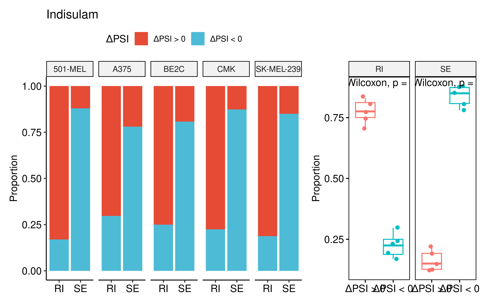
KB-0742 ranked second, suggesting its previously unappreciated potential as a splicing modulator. Similar to Indisulam, KB-0742 treatment led to a significant directional shift in RI and SE events.
dt1 <- dt %>%
filter(as_type %in% c("RI","SE")) %>%
filter(Drug == "KB-0742") %>%
group_by(sample_id,as_type) %>%
summarise(`ΔPSI > 0` = mean(IncLevelDifference > 0),
`ΔPSI < 0` = mean(IncLevelDifference < 0)) %>%
ungroup() %>%
tidyr::pivot_longer(cols = c(`ΔPSI > 0`, `ΔPSI < 0`), names_to = "type", values_to = "per")
#> `summarise()` has grouped output by 'sample_id'. You can override using the
#> `.groups` argument.
ggboxplot(dt1,x="type",y="per",facet.by = "as_type",add = "jitter",nrow =1,
color = "type",xlab = F,ylab = "Proportion",title = "KB-0742")+
stat_compare_means()+
scale_fill_npg()+
theme(legend.position = "none")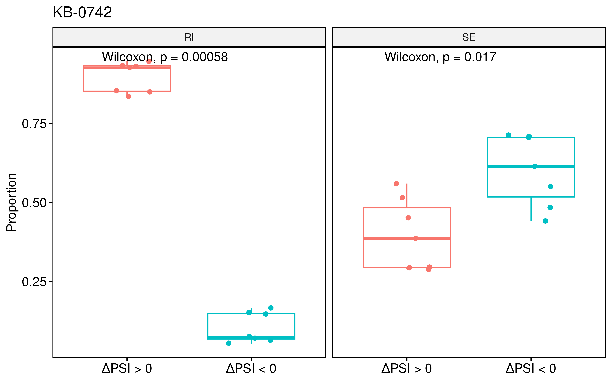
To further elucidate the transcriptional consequences of KB-0742 treatment, we performed GSEA comparing KB-0742-treated samples to untreated controls. Remarkably, the KEGG_SPLICESOME pathway was significantly enriched across all KB-0742 treatment conditions, providing transcriptomic evidence that KB-0742 globally disrupts splicing machinery.
rm(list = ls())
mapping <- readRDS("../data/human_id_mapping.rds")
mapping <- mapping %>% select(gene_id_version, symbol) %>% distinct_all()
sp_path <- fgsea::gmtPathways("../data/KEGG_SPLICEOSOME.v2026.1.Hs.gmt")
#> Warning in readLines(gmt.file): incomplete final line found on
#> '../data/KEGG_SPLICEOSOME.v2026.1.Hs.gmt'
sample_meta <- readRDS("../data/all_sample_meta.rds")
dt <- sample_meta %>% filter(Drug == "KB-0742")
res <- vector("list",nrow(dt))
for (i in 1:nrow(dt)){
tmp <- readRDS(paste0("../scripts/Shiny/data/",
dt$unid[i],"_deseq.rds"))
tmp <- tmp %>%
filter(!is.na(stat)) %>%
left_join(.,mapping %>% rename(gene_id = gene_id_version) %>%
select(gene_id, symbol)) %>%
group_by(symbol) %>%
slice_max(abs(stat), with_ties = F) %>% ungroup() %>%
filter(nchar(symbol) > 0)
ranks <- tmp$stat
names(ranks) <- tmp$symbol
ranks <- sort(ranks,decreasing = T)
sp_path_dt <- data.frame(gs_name="KEGG_SPLICEOSOME",
genes=sp_path$KEGG_SPLICEOSOME)
res_tmp <- clusterProfiler::GSEA(ranks, TERM2GENE = sp_path_dt)
res[[i]] <- res_tmp
names(res)[i] <- paste0(dt$cell_line[i],"-",dt$treat_time[i])
}
#> Joining with `by = join_by(gene_id, symbol)`
#>
#> using 'fgsea' for GSEA analysis, please cite Korotkevich et al (2019).
#> preparing geneSet collections...
#> GSEA analysis...
#> Warning in preparePathwaysAndStats(pathways, stats, minSize, maxSize, gseaParam, : There are ties in the preranked stats (12.06% of the list).
#> The order of those tied genes will be arbitrary, which may produce unexpected results.
#> leading edge analysis...
#> done...
#> Joining with `by = join_by(gene_id, symbol)`using 'fgsea' for GSEA analysis, please cite Korotkevich et al (2019).
#>
#> preparing geneSet collections...
#> GSEA analysis...
#> Warning in preparePathwaysAndStats(pathways, stats, minSize, maxSize, gseaParam, : There are ties in the preranked stats (13% of the list).
#> The order of those tied genes will be arbitrary, which may produce unexpected results.
#> leading edge analysis...
#> done...
#> Joining with `by = join_by(gene_id, symbol)`using 'fgsea' for GSEA analysis, please cite Korotkevich et al (2019).
#>
#> preparing geneSet collections...
#> GSEA analysis...
#> Warning in preparePathwaysAndStats(pathways, stats, minSize, maxSize, gseaParam, : There are ties in the preranked stats (12.29% of the list).
#> The order of those tied genes will be arbitrary, which may produce unexpected results.
#> Warning in fgseaMultilevel(pathways = pathways, stats = stats, minSize =
#> minSize, : For some of the pathways the P-values were likely overestimated. For
#> such pathways log2err is set to NA.
#> Warning in fgseaMultilevel(pathways = pathways, stats = stats, minSize =
#> minSize, : For some pathways, in reality P-values are less than 1e-10. You can
#> set the `eps` argument to zero for better estimation.
#> leading edge analysis...
#> done...
#> Joining with `by = join_by(gene_id, symbol)`using 'fgsea' for GSEA analysis, please cite Korotkevich et al (2019).
#>
#> preparing geneSet collections...
#> GSEA analysis...
#> Warning in preparePathwaysAndStats(pathways, stats, minSize, maxSize, gseaParam, : There are ties in the preranked stats (10.53% of the list).
#> The order of those tied genes will be arbitrary, which may produce unexpected results.
#> Warning in fgseaMultilevel(pathways = pathways, stats = stats, minSize =
#> minSize, : For some of the pathways the P-values were likely overestimated. For
#> such pathways log2err is set to NA.
#> Warning in fgseaMultilevel(pathways = pathways, stats = stats, minSize =
#> minSize, : For some pathways, in reality P-values are less than 1e-10. You can
#> set the `eps` argument to zero for better estimation.
#> leading edge analysis...
#> done...
#> Joining with `by = join_by(gene_id, symbol)`using 'fgsea' for GSEA analysis, please cite Korotkevich et al (2019).
#>
#> preparing geneSet collections...
#> GSEA analysis...
#> Warning in preparePathwaysAndStats(pathways, stats, minSize, maxSize, gseaParam, : There are ties in the preranked stats (10.61% of the list).
#> The order of those tied genes will be arbitrary, which may produce unexpected results.
#> leading edge analysis...
#> done...
#> Joining with `by = join_by(gene_id, symbol)`using 'fgsea' for GSEA analysis, please cite Korotkevich et al (2019).
#>
#> preparing geneSet collections...
#> GSEA analysis...
#> Warning in preparePathwaysAndStats(pathways, stats, minSize, maxSize, gseaParam, : There are ties in the preranked stats (11.37% of the list).
#> The order of those tied genes will be arbitrary, which may produce unexpected results.
#> leading edge analysis...
#> done...
#> Joining with `by = join_by(gene_id, symbol)`using 'fgsea' for GSEA analysis, please cite Korotkevich et al (2019).
#>
#> preparing geneSet collections...
#> GSEA analysis...
#> Warning in preparePathwaysAndStats(pathways, stats, minSize, maxSize, gseaParam, : There are ties in the preranked stats (10.79% of the list).
#> The order of those tied genes will be arbitrary, which may produce unexpected results.
#> leading edge analysis...
#> done...
GseaVis::GSEAmultiGP(gsea_list = res,
geneSetID = "KEGG_SPLICEOSOME",
exp_name = gsub("GSE263153_","",dt$unid),
addPval = T,legend.position = "right",pvalY=0.98)
#> Warning: replacing previous import 'AnnotationDbi::select' by 'dplyr::select'
#> when loading 'GseaVis'
#> Warning: replacing previous import 'purrr::exec' by 'yulab.utils::exec' when
#> loading 'GseaVis'
#> Warning: `aes_()` was deprecated in ggplot2 3.0.0.
#> ℹ Please use tidy evaluation idioms with `aes()`
#> ℹ The deprecated feature was likely used in the GseaVis package.
#> Please report the issue at <https://github.com/junjunlab/GseaVis/issues>.
#> This warning is displayed once every 8 hours.
#> Call `lifecycle::last_lifecycle_warnings()` to see where this warning was
#> generated.
#> Warning in ggplot2::geom_rect(ggplot2::aes(xmin = 0, xmax = max(gsdata$x), : All aesthetics have length 1, but the data has 19958 rows.
#> ℹ Please consider using `annotate()` or provide this layer with data containing
#> a single row.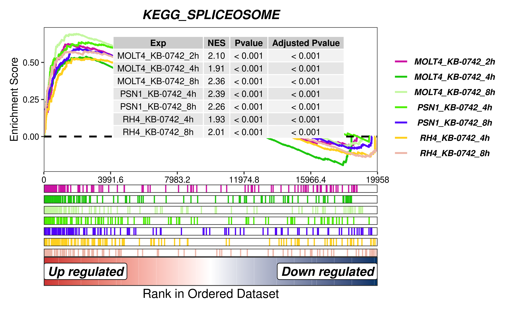
Furthermore, to investigate the functional impact of the AS alterations triggered by KB-0742, we extracted genes exhibiting differential RI-type AS events (which has the largest number) and subjected them to KEGG pathway enrichment analysis. The results revealed that these genes were significantly enriched in multiple genetic information processing pathways, including transcription, translation, protein folding, and degradation, indicating that KB-0742-induced splicing dysregulation broadly impacts central dogma processes.
rm(list = ls())
res <- readRDS("../data/rmats_res_fdr005.rds")
sample_meta <- readRDS("../data/all_sample_meta.rds")
res <- left_join(res, sample_meta %>% rename(sample_id = unid))
#> Joining with `by = join_by(sample_id)`
res <- res %>% filter(abs(IncLevelDifference) > 0.1)
drugs <- res %>% group_by(Drug) %>%
summarise(cell_counts = length(unique(cell_line))) %>% ungroup()
drugs <- drugs %>% filter(cell_counts >= 3)
dt <- res %>%
filter(Drug %in% drugs$Drug)
dt <- dt %>% filter(Drug == "KB-0742")
dt_summ <- dt %>% group_by(sample_id, as_type) %>% summarise(counts =n()) %>% ungroup()
#> `summarise()` has grouped output by 'sample_id'. You can override using the
#> `.groups` argument.
ggboxplot(dt_summ,x="as_type",y="counts",xlab = F,
ylab = "Counts",add = "jitter",color = "as_type")+
theme(legend.position = "none")+
scale_color_npg()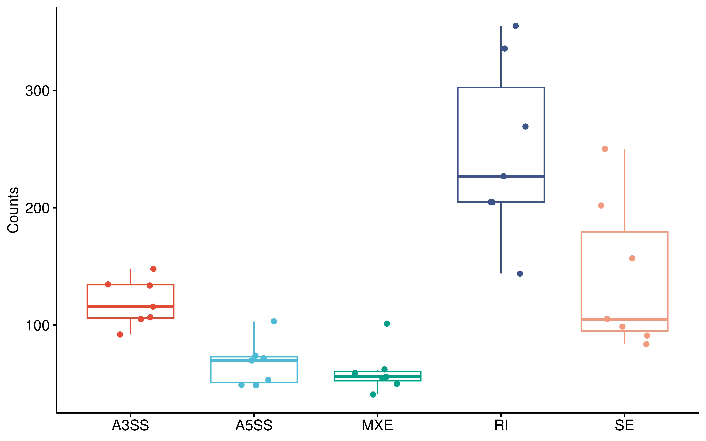
pos_gene <- dt %>% filter(as_type == "RI") %>%
filter(IncLevelDifference > 0)
pos_entrez <- clusterProfiler::bitr(pos_gene$geneSymbol,
fromType = "SYMBOL",
toType = "ENTREZID",
OrgDb = "org.Hs.eg.db")
#>
#> 'select()' returned 1:1 mapping between keys and columns
KEGG_res <- clusterProfiler::enrichKEGG(gene = pos_entrez$ENTREZID,
organism = "hsa",
pvalueCutoff = 0.05,
qvalueCutoff = 0.05,
pAdjustMethod = "BH",
minGSSize = 10,
maxGSSize = 500)
#> Reading KEGG annotation online: "https://rest.kegg.jp/link/hsa/pathway"...
#> Reading KEGG annotation online: "https://rest.kegg.jp/list/pathway/hsa"...
KEGG_res <- KEGG_res@result %>% filter(p.adjust < 0.05)
KEGG_res <- KEGG_res %>% filter(!grepl("disease",subcategory))
ggplot(data = KEGG_res,
aes(x = -log10(pvalue), y = Description, fill = Count)) +
geom_bar(stat = "identity",width = 0.8) +
labs(x = "-log10(Pvalue)",
y = "Pathway")+
scale_fill_bs5("blue")+
theme_pubr()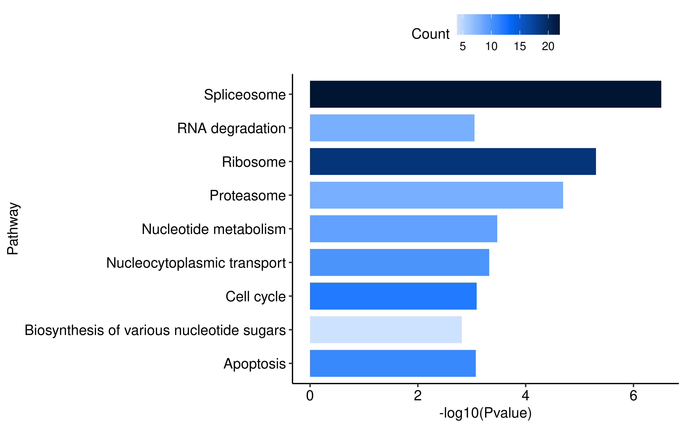
Characterization of potential neoantigen derived from drug-induced differential AS
Following the observation of widespread drug-induced alternative
splicing (AS) events, we next investigated their potential to generate
novel immunogenic targets by predicting HLA-binding peptides derived
from these differential AS events. Code to process data for jcast and
NetMHCpan input can be found in
scripts/processing_for_neo.R.
rmats_counts <- readRDS("../data/rmats_filter.rds")
###GSE174498_CEM_L-asparaginase no output
rmats_counts <- rmats_counts %>% filter(sample != "GSE174498_CEM_L-asparaginase")
rmats_counts <- rmats_counts %>% filter((abs(IncLevelDifference) > 0.1) & (FDR <0.05))
all_samples <- unique(rmats_counts$sample)
samples <- readRDS("../data/samples_with_HLA.rds")
all_samples <- intersect(all_samples, samples$unid)
library(doParallel)
library(foreach)
#create the cluster
my.cluster <- parallel::makeCluster(
10,
type = "PSOCK"
)
#register it to be used by %dopar%
doParallel::registerDoParallel(cl = my.cluster)
res <- foreach(
i = 1:length(all_samples),
.packages = c("dplyr")
) %dopar% {
all_files <- list.files(paste0("~/GEO_data/SRA/gse_out/",all_samples[i],
"/jcast_out/binding_out/res/"),pattern = "tsv",
full.names = T)
dt <- sapply(all_files,
function(x){
tmp <- data.table::fread(x,data.table = F)
colnames(tmp)[5] <- "score"
tmp$binding_type <- gsub(".+//","",x) %>% gsub("_.+","",.)
return(tmp)
},simplify = F)
dt <- bind_rows(dt) %>% distinct_all()
dt_filter <- dt %>%
select(allele, peptide, percentile, binding_type) %>%
filter(percentile < 2) %>% distinct_all()
dt_filter_summ <- dt_filter %>%
group_by(peptide, allele) %>%
summarise(both_sb = n()) %>% ungroup() %>% filter(both_sb == 2) ###ba and el < 2
dt_filter <- dt_filter %>% filter(peptide %in% dt_filter_summ$peptide)
###peptide binding
dt1 <- dt_filter %>%
tidyr::pivot_wider(names_from = c(allele, binding_type), values_from = percentile)
dt_all <- dt %>%
select(allele, peptide, percentile, binding_type) %>%
filter(peptide %in% dt1$peptide) %>%
tidyr::pivot_wider(names_from = c(allele, binding_type), values_from = percentile)
bc <- apply(dt_all[,2:ncol(dt_all)],1,function(x){sum(x < 2, na.rm = T)})
dt_all$binding_counts <- bc
dt_all <- dt_all %>% select(peptide, binding_counts, everything()) %>%
arrange(desc(binding_counts))
all_mer <- readRDS(paste0("~/GEO_data/SRA/gse_out/",all_samples[i],
"/jcast_out/binding_out/all_mers.rds"))
###peptide metadata
dt2 <- all_mer %>% filter(seq %in% dt_all$peptide)
dt2 <- dt2 %>%
tidyr::separate_wider_delim(seq_id, delim = "|",
names = c("sp","UniProt_ID","UniProt_symbol","Gene_ID",
"rMATS_type","rMTS_ID","Chr","Anch_Exon_SE",
"Alt_Exon_SE","strand_phase","Msjc","Tier")) %>%
select(-sp) %>% rename(pep_len = type) %>%
mutate(Msjc = as.numeric(gsub("r","",Msjc)))
dt3 <- rmats_counts %>% filter(sample %in% all_samples[i])
dt_meta <- dt2 %>% distinct_all() %>%
mutate(rMATS_type2 = sub("[0-9]$", "", rMATS_type)) %>%
inner_join(., dt3 %>% rename(rMTS_ID = ID, rMATS_type2 = type) %>%
mutate(rMTS_ID = as.character(rMTS_ID))) %>% ##FDR < 0.05 psi > 0.1
select(-GeneID) %>%
select(seq, pep_len, rMTS_ID, sample, everything())
dt_all <- dt_all %>% filter(peptide %in% dt_meta$seq)
saveRDS(dt_meta,
paste0("../scripts/Shiny/data/",
all_samples[i], "_binding_pep_meta.rds"))
saveRDS(dt_all,
paste0("../scripts/Shiny/data/",
all_samples[i], "_binding_pep.rds"))
}
parallel::stopCluster(cl = my.cluster)
####stat
all_files <- list.files("scripts/Shiny/data/",pattern = "_pep.rds")
sample_meta <- readRDS("../data/all_sample_meta.rds")
sample_meta <- sample_meta %>%
filter(unid %in% gsub("_binding_pep.rds","",all_files))
library(doParallel)
library(foreach)
#create the cluster
my.cluster <- parallel::makeCluster(
60,
type = "PSOCK"
)
#register it to be used by %dopar%
doParallel::registerDoParallel(cl = my.cluster)
res <- foreach(
i = sample_meta$unid,
.packages = c("dplyr")
) %dopar% {
dt <- readRDS(paste0("../scripts/Shiny/data/",i,"_binding_pep.rds"))
dt <- dt %>%
select(-binding_counts) %>%
tidyr::pivot_longer(cols = 2:ncol(.), names_to = "allel", values_to = "rank")
dt_filter <- dt %>% filter(rank < 0.5)
dt_filter_summ <- dt_filter %>%
mutate(allel = gsub("_.+","",allel)) %>%
group_by(peptide, allel) %>%
summarise(both_sb = n()) %>% ungroup() %>% filter(both_sb == 2)
dt_filter <- dt_filter %>% filter(peptide %in% dt_filter_summ$peptide)
data.frame(
unid = i,
sb_counts = length(unique(dt_filter$peptide))
)
}
parallel::stopCluster(cl = my.cluster)
res <- bind_rows(res)
sample_meta <- left_join(sample_meta, res)
spres <- readRDS("../data/rmats_fdr01.rds")
spres <- spres %>%
group_by(ids) %>% summarise(t_counts = sum(counts)) %>% ungroup()
sample_meta <- left_join(sample_meta, spres %>% rename(unid = ids))
saveRDS(sample_meta,"data/sample_neo.rds")Overall, we identified a substantial repertoire of drug-induced HLA-binding peptides across the dataset. The abundance of these peptides varied across samples depending on the tissue origin and the specific drug treatment.
rm(list = ls())
sample_meta <- readRDS("../data/sample_neo.rds")
sample_meta <- sample_meta %>% mutate(log2counts = log2(sb_counts))
ord <- sample_meta %>% group_by(Tissue_Source2) %>%
summarise(med = median(log2counts)) %>%
ungroup() %>% arrange(desc(med))
p1 <- ggboxplot(sample_meta,x="Tissue_Source2",y="log2counts",add = "jitter",
color = "Tissue_Source2",order = ord$Tissue_Source2,xlab = F)+
theme(legend.position = "none")+
rotate_x_text(45)
dt <- sample_meta %>% filter(!is.na(DrugClass))
ord <- dt %>% group_by(DrugClass) %>% summarise(med = median(log2counts)) %>%
ungroup() %>% arrange(desc(med))
p2 <- ggboxplot(dt,x="DrugClass",y="log2counts",add = "jitter",
color = "DrugClass",order = ord$DrugClass,xlab = F)+
theme(legend.position = "none")+
rotate_x_text(90)
p1 / p2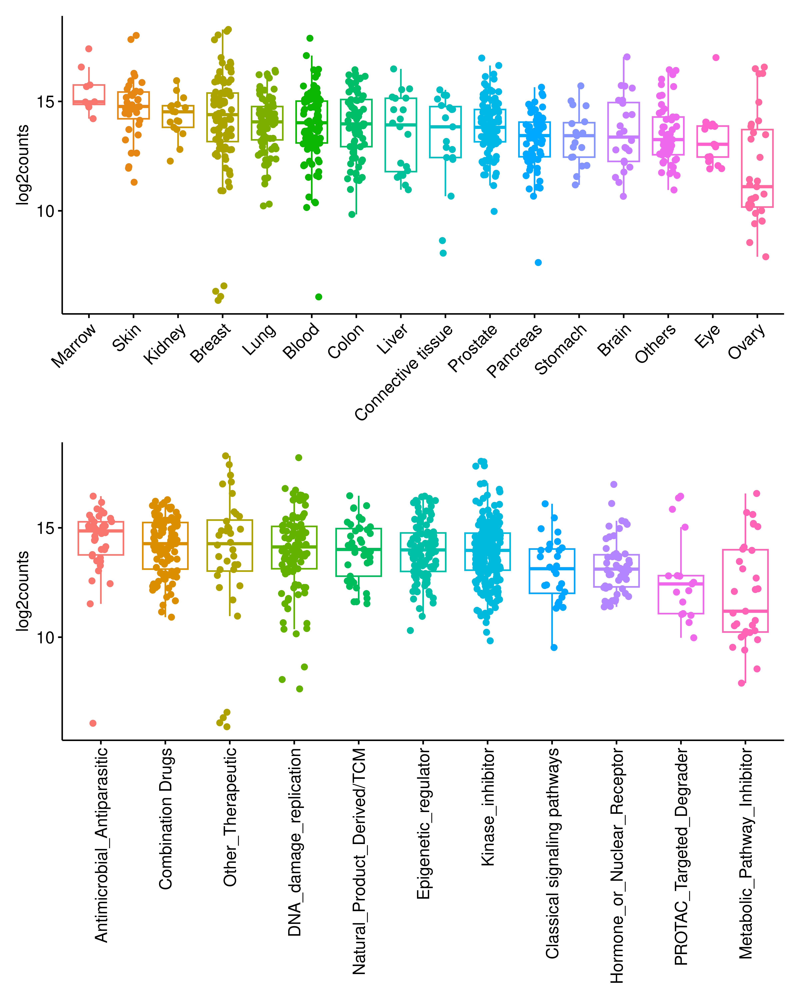
To identify the most potent modulators of splicing-derived antigenicity, we ranked the drug treatments by the number of differential AS-derived HLA-binding peptides. Consistent with our previous findings, Indisulam, which induced the most profound global AS alterations, ranked first.
dt_summ <- sample_meta %>% group_by(Drug) %>%
summarise(counts = length(unique(cell_line))) %>% ungroup() %>%
filter(counts >= 3)
dt <- sample_meta %>% filter(Drug %in% dt_summ$Drug)
drug_summ <- dt %>% group_by(Drug) %>%
summarise(median_c = median(log2counts)) %>% ungroup() %>%
arrange(desc(median_c)) %>%
slice_head(n=10)
dt_filter <- dt %>% filter(Drug %in% drug_summ$Drug)
ggboxplot(dt_filter,x="Drug",y="log2counts",add = "jitter",
color = "Drug",order = drug_summ$Drug, ylab = "Log2Counts")+
theme(legend.position = "none")+
rotate_x_text(45)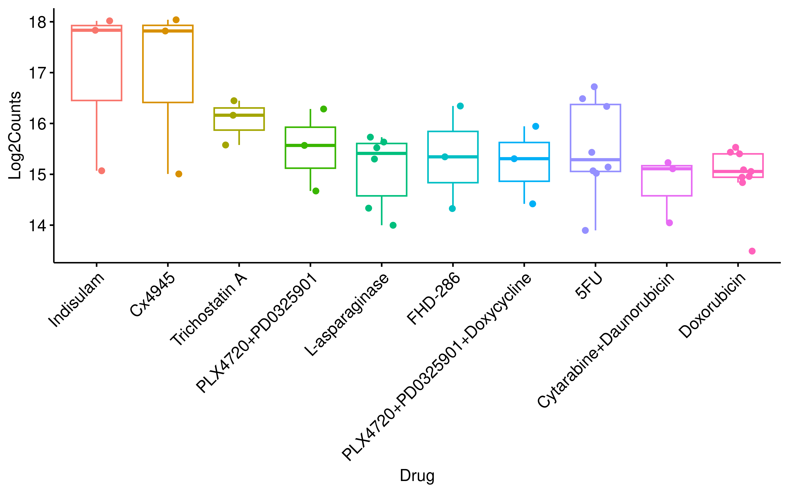
Notably, we observed a strong positive correlation (Pearson R = 0.86) between the number of differential AS events and the number of HLA-binding peptides across drug treatments, indicating that the raw count of binding peptides is largely driven by the overall splicing alteration magnitude. Given this inherent bias, we normalized the peptide counts by the total number of differential AS events per treatment to evaluate the splicing-to-antigen conversion efficiency. Strikingly, after normalization, onvansertib and its combinations emerged as top-ranking drug treatments, despite its relatively modest impact on global AS in previous analyses.
sample_meta <- sample_meta %>% mutate(log2AScounts = log2(t_counts))
ggscatter(sample_meta, x = "log2counts", y = "log2AScounts",
color = "black", shape = 21, size = 3,
add = "reg.line",
add.params = list(color = "blue", fill = "lightgray"),
conf.int = TRUE,
cor.coef = TRUE,
cor.coeff.args = list(method = "pearson", label.x = 10, label.sep = "\n"),
xlab = "Neoantigen Counts", ylab = "Differential AS Counts"
)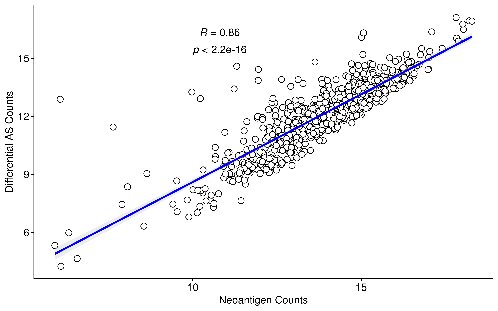
dt <- dt %>%
mutate(norm_counts = sb_counts / t_counts)
drug_summ <- dt %>% group_by(Drug) %>%
summarise(median_c = median(norm_counts)) %>% ungroup() %>%
arrange(desc(median_c)) %>%
slice_head(n=10)
dt_filter <- dt %>% filter(Drug %in% drug_summ$Drug)
ggboxplot(dt_filter,x="Drug",y="norm_counts",add = "jitter",
color = "Drug",order = drug_summ$Drug,
ylab = "Normalized Counts (Neoantigen / Differential AS)")+
theme(legend.position = "none")+
rotate_x_text(45)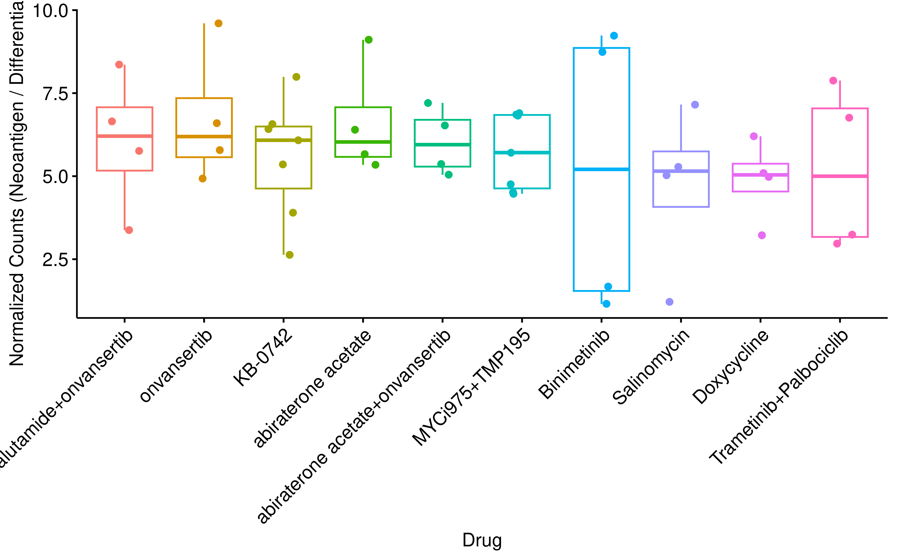
This suggests a distinct class of drugs with high splicing-to-antigen conversion rates, the antigenic potential of which is masked when relying solely on raw counts. To rigorously validate this higher conversion efficiency of onvansertib and rule out confounding effects from differing HLA genotypes across cell lines, we restricted our analysis to the shared HLA alleles between indisulam- and onvansertib-treated cell lines. By calculating the ratio of binding peptides to their originating differential AS events for these shared alleles, we found that onvansertib indeed exhibits a substantially higher splicing-to-antigen conversion efficiency compared to indisulam.
sample_meta <- readRDS("../data/all_sample_meta.rds")
samples <- readRDS("../data/samples_with_HLA.rds")
onv_sample <- sample_meta %>% filter(Drug == "onvansertib")
onv_hla <- samples %>% filter(unid %in% onv_sample$unid)
indi_sample <- sample_meta %>% filter(Drug == "Indisulam")
indi_hla <- samples %>% filter(unid %in% indi_sample$unid)
overlap_hla <- intersect(paste0(indi_hla$HLA,collapse = ",") %>% strsplit(.,",") %>% `[[`(1),
paste0(onv_hla$HLA,collapse = ",") %>% strsplit(.,",") %>% `[[`(1))
all_samples <- c(onv_hla$unid, indi_hla$unid) %>% unique()
rmats_counts <- readRDS("../data/rmats_filter.rds")
rmats_counts <- rmats_counts %>% filter((abs(IncLevelDifference) > 0.1) & (FDR <0.05))
dt_res <- rmats_counts %>%
filter(sample %in% all_samples)
res <- vector("list",length(all_samples))
for (i in 1:length(all_samples)){
dt <- readRDS(paste0("../scripts/Shiny/data/",all_samples[i],"_binding_pep.rds"))
dt <- dt %>%
select(-binding_counts) %>%
tidyr::pivot_longer(cols = 2:ncol(.), names_to = "allel", values_to = "rank")
dt_filter <- dt %>%
filter(gsub("_.+","",allel) %in% overlap_hla)
dt_filter <- dt_filter %>% filter(rank < 0.5)
dt_filter_summ <- dt_filter %>%
mutate(allel = gsub("_.+","",allel)) %>%
group_by(peptide, allel) %>%
summarise(both_sb = n()) %>% ungroup() %>% filter(both_sb == 2)
dt_filter <- dt_filter %>% filter(peptide %in% dt_filter_summ$peptide)
dt_meta <- readRDS(paste0("../scripts/Shiny/data/",all_samples[i],
"_binding_pep_meta.rds"))
dt_meta <- dt_meta %>% filter(seq %in% dt_filter$peptide)
dt_meta <- dt_meta %>% mutate(ids = paste0(rMATS_type2,"_",rMTS_ID))
dt_mer <- readRDS(paste0("~/GEO_data/SRA/gse_out/",all_samples[i],
"/jcast_out/binding_out/all_mers.rds"))
dt_mer <- dt_mer %>%
tidyr::separate_wider_delim(seq_id, delim = "|",
names = c("sp","UniProt_ID","UniProt_symbol","Gene_ID",
"rMATS_type","rMTS_ID","Chr","Anch_Exon_SE",
"Alt_Exon_SE","strand_phase","Msjc","Tier")) %>%
select(-sp) %>% rename(pep_len = type) %>%
mutate(rMATS_type2 = sub("[0-9]$", "", rMATS_type))
dt_mer <- dt_mer %>% mutate(ids = paste0(rMATS_type2,"_",rMTS_ID))
dt3 <- rmats_counts %>% filter(sample %in% all_samples[i]) %>%
mutate(ids = paste0(type,"_",ID))
dt_mer <- dt_mer %>% filter(ids %in% dt3$ids)
dt_mer <- dt_mer %>% filter(ids %in% dt_meta$ids)
dt_meta$dev_events <- length(unique(dt_mer$ids))
res[[i]] <- dt_meta
}
res <- bind_rows(res)
saveRDS(res,"data/Indisulam_onvansertib_neoas.rds")rm(list = ls())
res <- readRDS("../data/Indisulam_onvansertib_neoas.rds")
res_summ <- res %>% group_by(sample) %>%
summarise(neo_counts = length(unique(seq)),
as_counts = unique(dev_events)) %>% ungroup() %>%
mutate(effc = neo_counts/as_counts) %>%
mutate(Drug = gsub(".+_","",sample))
ggboxplot(res_summ,x="Drug",y="effc",add = "jitter",color = "Drug",
ylab = "#(Binding Peptides) / #(Differential AS)")+
stat_compare_means()+
scale_color_npg()+
guides(color = 'none')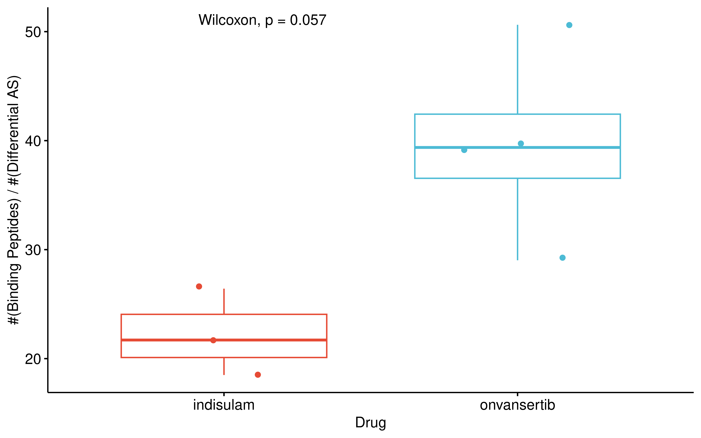
We then compared the HLA-binding peptide yield across different types of AS events. Our analysis revealed significant differences in the number of binding peptides generated from various differential splicing types.
all_files <- list.files("../scripts/Shiny/data/",pattern = "_pep_meta.rds")
sample_meta <- readRDS("../data/all_sample_meta.rds")
sample_meta <- sample_meta %>%
filter(unid %in% gsub("_binding_pep_meta.rds","",all_files))
my.cluster <- parallel::makeCluster(
60,
type = "PSOCK"
)
#register it to be used by %dopar%
doParallel::registerDoParallel(cl = my.cluster)
res <- foreach(
i = sample_meta$unid,
.packages = c("dplyr")
) %dopar% {
dt_meta <- readRDS(paste0("../scripts/Shiny/data/",i,"_binding_pep_meta.rds"))
dt <- readRDS(paste0("../scripts/Shiny/data/",i,"_binding_pep.rds"))
dt <- dt %>%
select(-binding_counts) %>%
tidyr::pivot_longer(cols = 2:ncol(.), names_to = "allel", values_to = "rank")
dt_filter <- dt %>% filter(rank < 0.5)
dt_filter_summ <- dt_filter %>%
mutate(allel = gsub("_.+","",allel)) %>%
group_by(peptide, allel) %>%
summarise(both_sb = n()) %>% ungroup() %>% filter(both_sb == 2)
dt_filter <- dt_filter %>% filter(peptide %in% dt_filter_summ$peptide)
dt_meta <- dt_meta %>% filter(seq %in% dt_filter$peptide)
dt_summ <- dt_meta %>%
group_by(rMATS_type2) %>%
summarise(counts = length(unique(seq))) %>% ungroup()
dt_summ$unid <- i
return(dt_summ)
}
parallel::stopCluster(cl = my.cluster)
res <- bind_rows(res)
saveRDS(res, "../data/AS_type_neo.rds")rm(list = ls())
res <- readRDS("../data/AS_type_neo.rds")
res <- res %>% mutate(log2counts = log2(counts))
res_summ <- res %>% group_by(rMATS_type2) %>%
summarise(median_c = median(counts)) %>% ungroup() %>%
arrange(desc(median_c))
my_c <- list(c("SE","A3SS"),c("SE","RI"),c("SE","MXE"),c("SE","A5SS"),
c("A3SS","RI"),c("A3SS","MXE"),c("A3SS","A5SS"),
c("RI","MXE"),c("RI","A5SS"),
c("MXE","A5SS"))
ggviolin(res,x="rMATS_type2",y="log2counts",add = "boxplot",
color = "rMATS_type2",order = res_summ$rMATS_type2,
xlab = F)+
theme(legend.position = "none")+
stat_compare_means(comparisons = my_c)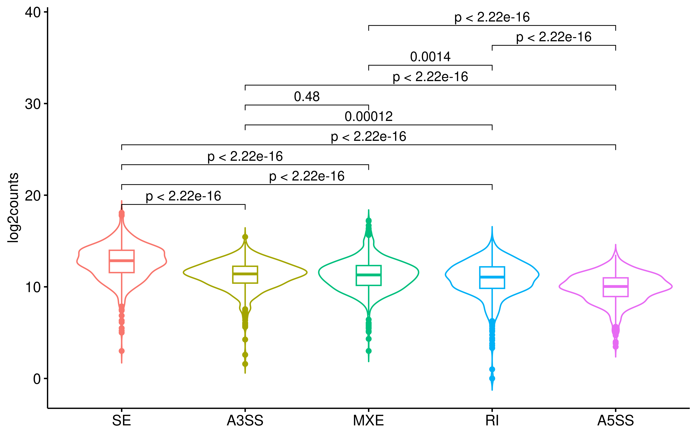
Specifically, SE events yielded the highest number of binding peptides, whereas A5SS events yielded the fewest. Interestingly, while SE contributed the most peptides in total, RI events exhibited the highest proportion of binding peptides (2.07% versus 2.05% for SE). This observation parallels our drug-level findings, reinforcing that the AS event type with the greatest absolute output may differ from the one with the highest antigenic conversion potential.
rmats_counts <- readRDS("../data/rmats_filter.rds")
rmats_counts <- rmats_counts %>% filter(sample != "GSE174498_CEM_L-asparaginase")
rmats_counts <- rmats_counts %>% filter((abs(IncLevelDifference) > 0.1) & (FDR <0.05))
all_files <- list.files("scripts/Shiny/data/",pattern = "_pep_meta.rds")
sample_meta <- readRDS("../data/all_sample_meta.rds")
sample_meta <- sample_meta %>%
filter(unid %in% gsub("_binding_pep_meta.rds","",all_files))
my.cluster <- parallel::makeCluster(
10,
type = "PSOCK"
)
#register it to be used by %dopar%
doParallel::registerDoParallel(cl = my.cluster)
res <- foreach(
i = sample_meta$unid,
.packages = c("dplyr")
) %dopar% {
dt_meta <- readRDS(paste0("../scripts/Shiny/data/",i,"_binding_pep_meta.rds"))
dt <- readRDS(paste0("../scripts/Shiny/data/",i,"_binding_pep.rds"))
dt <- dt %>%
select(-binding_counts) %>%
tidyr::pivot_longer(cols = 2:ncol(.), names_to = "allel", values_to = "rank")
dt_filter <- dt %>% filter(rank < 0.5)
dt_filter_summ <- dt_filter %>%
mutate(allel = gsub("_.+","",allel)) %>%
group_by(peptide, allel) %>%
summarise(both_sb = n()) %>% ungroup() %>% filter(both_sb == 2)
dt_filter <- dt_filter %>% filter(peptide %in% dt_filter_summ$peptide)
dt_meta_filter <- dt_meta %>% filter(seq %in% dt_filter$peptide)
dt_binding <- dt_meta_filter %>%
group_by(rMATS_type2, rMTS_ID) %>%
summarise(binding = length(unique(seq))) %>% ungroup()
dt_mer <- readRDS(paste0("~/GEO_data/SRA/gse_out/",i,"/jcast_out/binding_out/all_mers.rds"))
dt_mer <- dt_mer %>% filter(!(seq %in% dt_meta$seq)) ###ba 或者 el 至少有一个 大于 2
dt_mer <- dt_mer %>%
tidyr::separate_wider_delim(seq_id, delim = "|",
names = c("sp","UniProt_ID","UniProt_symbol","Gene_ID",
"rMATS_type","rMTS_ID","Chr","Anch_Exon_SE",
"Alt_Exon_SE","strand_phase","Msjc","Tier")) %>%
select(-sp) %>% rename(pep_len = type) %>%
mutate(rMATS_type2 = sub("[0-9]$", "", rMATS_type))
dt3 <- rmats_counts %>% filter(sample %in% i)
dt_mer <- dt_mer %>% distinct_all() %>%
inner_join(., dt3 %>% rename(rMTS_ID = ID, rMATS_type2 = type) %>%
mutate(rMTS_ID = as.character(rMTS_ID))) ##FDR < 0.05 psi > 0.1
dt_nobind <- dt_mer %>%
group_by(rMATS_type2, rMTS_ID) %>%
summarise(no_binding = length(unique(seq))) %>% ungroup()
dt_all <- full_join(dt_binding, dt_nobind)
dt_all$unid <- i
return(dt_all)
}
parallel::stopCluster(cl = my.cluster)
res <- bind_rows(res)
saveRDS(res,"data/neo_as_counts.rds")rm(list = ls())
res <- readRDS("../data/neo_as_counts.rds")
res <- res %>%
tidyr::pivot_longer(cols = c(binding, no_binding),
names_to = "type", values_to = "counts")
res <- res %>% mutate(counts = ifelse(is.na(counts),0,counts))
res_summ <- res %>%
group_by(rMATS_type2, type) %>%
summarise(total_counts = sum(counts,na.rm = T)) %>%
ungroup()
#> `summarise()` has grouped output by 'rMATS_type2'. You can override using the
#> `.groups` argument.
res_summ %>%
group_by(rMATS_type2) %>%
summarise(binding_per = total_counts[type == "binding"]/total_counts[type == "no_binding"])
#> # A tibble: 5 × 2
#> rMATS_type2 binding_per
#> <chr> <dbl>
#> 1 A3SS 0.0206
#> 2 A5SS 0.0203
#> 3 MXE 0.0208
#> 4 RI 0.0212
#> 5 SE 0.0209
library(ggalluvial)
ggplot(data = res_summ,
aes(axis1 = rMATS_type2, axis2 = type,
y = total_counts)) +
scale_x_discrete(limits = c("rMATS_type2", "type"), expand = c(.2, .05)) +
geom_alluvium(aes(fill = type)) +
geom_stratum() +
geom_text(stat = "stratum", aes(label = after_stat(stratum))) +
theme_minimal()+
scale_fill_npg()+
guides(fill = "none")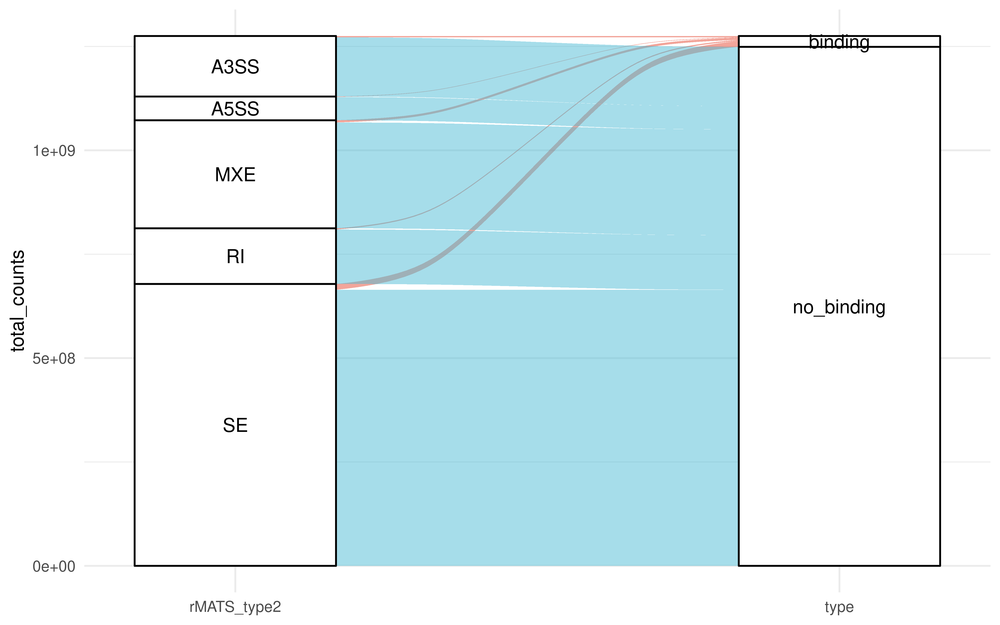
Ultimately, to screen for drugs with the greatest potential to enhance immunotherapy, we restricted our analysis to peptides binding to the three HLA alleles with the highest population frequencies (Sanchez-Mazas et al., 2024), thereby focusing on candidates with broad patient coverage.
samples <- readRDS("../data/samples_with_HLA.rds")
top_hlas <- samples %>%
filter(grepl("HLA-A*02:01",HLA,fixed = T) | grepl("HLA-A*24:02",HLA,fixed = T) | grepl("HLA-C*04:01",HLA,fixed = T))
all_samples <- unique(top_hlas$unid)
library(doParallel)
library(foreach)
#create the cluster
my.cluster <- parallel::makeCluster(
60,
type = "PSOCK"
)
#register it to be used by %dopar%
doParallel::registerDoParallel(cl = my.cluster)
res <- foreach(
i = all_samples,
.packages = c("dplyr")
) %dopar% {
dt <- readRDS(paste0("../scripts/Shiny/data/",i,"_binding_pep.rds"))
dt <- dt %>%
select(-binding_counts) %>%
tidyr::pivot_longer(cols = 2:ncol(.), names_to = "allel", values_to = "rank")
dt_filter <- dt %>%
filter(gsub("_.+","",allel) %in% c("HLA-A*02:01","HLA-A*24:02","HLA-C*04:01"))
dt_filter <- dt_filter %>% filter(rank < 0.5)
dt_filter_summ <- dt_filter %>%
mutate(allel = gsub("_.+","",allel)) %>%
group_by(peptide, allel) %>%
summarise(both_sb = n()) %>% ungroup() %>% filter(both_sb == 2)
dt_filter <- dt_filter %>% filter(peptide %in% dt_filter_summ$peptide)
dt_meta <- readRDS(paste0("../scripts/Shiny/data/",i,"_binding_pep_meta.rds"))
dt_meta <- dt_meta %>% filter(seq %in% dt_filter$peptide)
gene_exp <- readRDS(paste0("../scripts/Shiny/data/",i,"_deseq.rds"))
gene_exp <- gene_exp %>%
select(symbol, log2FoldChange) %>%
group_by(symbol) %>%
slice_max(abs(log2FoldChange), with_ties = F, na_rm = T) %>% ungroup() %>%
filter(nchar(symbol) > 0) %>% as.data.frame()
dt_meta <- left_join(dt_meta, gene_exp %>% rename(geneSymbol = symbol))
dt_meta <- dt_meta %>% group_by(seq) %>%
summarise(max_fc = max(log2FoldChange,na.rm = T),
max_fc_gene = geneSymbol[which.max(log2FoldChange)]) %>% ungroup()
dt_filter <- left_join(dt_filter, dt_meta %>% rename(peptide = seq))
dt_filter <- dt_filter %>% filter(max_fc > 1)
tmp_res <- dt_filter %>%
mutate(allel = gsub("_.+","",allel)) %>%
group_by(allel) %>% summarise(neo_counts = length(unique(peptide)))
tmp_res$unid <- i
return(tmp_res)
}
parallel::stopCluster(cl = my.cluster)
res <- bind_rows(res)
saveRDS(res,"../data/topHLA_neo.rds")rm(list = ls())
res <- readRDS("../data/topHLA_neo.rds")
sample_meta <- readRDS("../data/all_sample_meta.rds")
res <- left_join(res,sample_meta)
#> Joining with `by = join_by(unid)`
###至少有三个细胞系的药物
res_summ <- res %>% group_by(Drug) %>% summarise(cell_c = length(unique(cell_line))) %>%
ungroup() %>% filter(cell_c >= 3)
res_filter <- res %>% filter(Drug %in% res_summ$Drug)
dt <- res_filter %>%
group_by(allel, Drug) %>%
summarise(mean_neo_c = median(log2((neo_counts)))) %>% ungroup()
#> `summarise()` has grouped output by 'allel'. You can override using the
#> `.groups` argument.
dt <- dt %>%
tidyr::pivot_wider(names_from = Drug, values_from = mean_neo_c) %>% as.data.frame()
rownames(dt) <- dt$allel
dt$allel <- NULL
dt <- dt %>% t() %>% as.data.frame() %>%
arrange(desc(`HLA-A*02:01`)) %>% t() %>% as.data.frame()
library(ComplexHeatmap)
#> Loading required package: grid
#> ========================================
#> ComplexHeatmap version 2.22.0
#> Bioconductor page: http://bioconductor.org/packages/ComplexHeatmap/
#> Github page: https://github.com/jokergoo/ComplexHeatmap
#> Documentation: http://jokergoo.github.io/ComplexHeatmap-reference
#>
#> If you use it in published research, please cite either one:
#> - Gu, Z. Complex Heatmap Visualization. iMeta 2022.
#> - Gu, Z. Complex heatmaps reveal patterns and correlations in multidimensional
#> genomic data. Bioinformatics 2016.
#>
#>
#> The new InteractiveComplexHeatmap package can directly export static
#> complex heatmaps into an interactive Shiny app with zero effort. Have a try!
#>
#> This message can be suppressed by:
#> suppressPackageStartupMessages(library(ComplexHeatmap))
#> ========================================
library(circlize)
#> ========================================
#> circlize version 0.4.16
#> CRAN page: https://cran.r-project.org/package=circlize
#> Github page: https://github.com/jokergoo/circlize
#> Documentation: https://jokergoo.github.io/circlize_book/book/
#>
#> If you use it in published research, please cite:
#> Gu, Z. circlize implements and enhances circular visualization
#> in R. Bioinformatics 2014.
#>
#> This message can be suppressed by:
#> suppressPackageStartupMessages(library(circlize))
#> ========================================
col_fun = colorRamp2(c(3, 5, 12), c("#FEE5C1", "#FC8C59", "#B70503"))
Heatmap(dt,cluster_rows = F,cluster_columns = F,col = col_fun,
name = "Median of log2(#Neo)",border="black",
rect_gp = gpar(col = "white", lwd = 2),column_names_max_height = unit(8, "cm"))
#> Warning: The input is a data frame-like object, convert it to a matrix.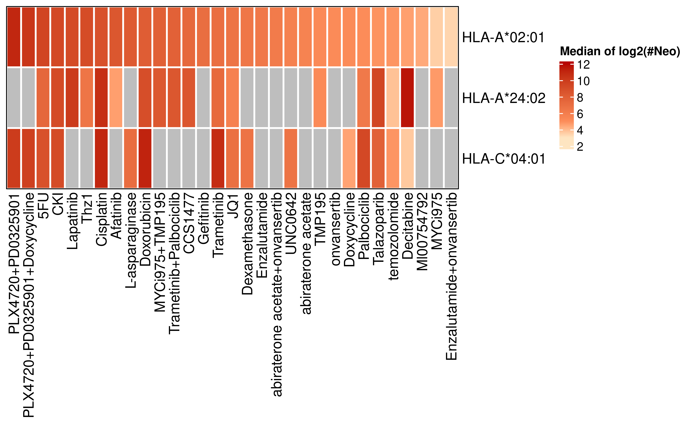